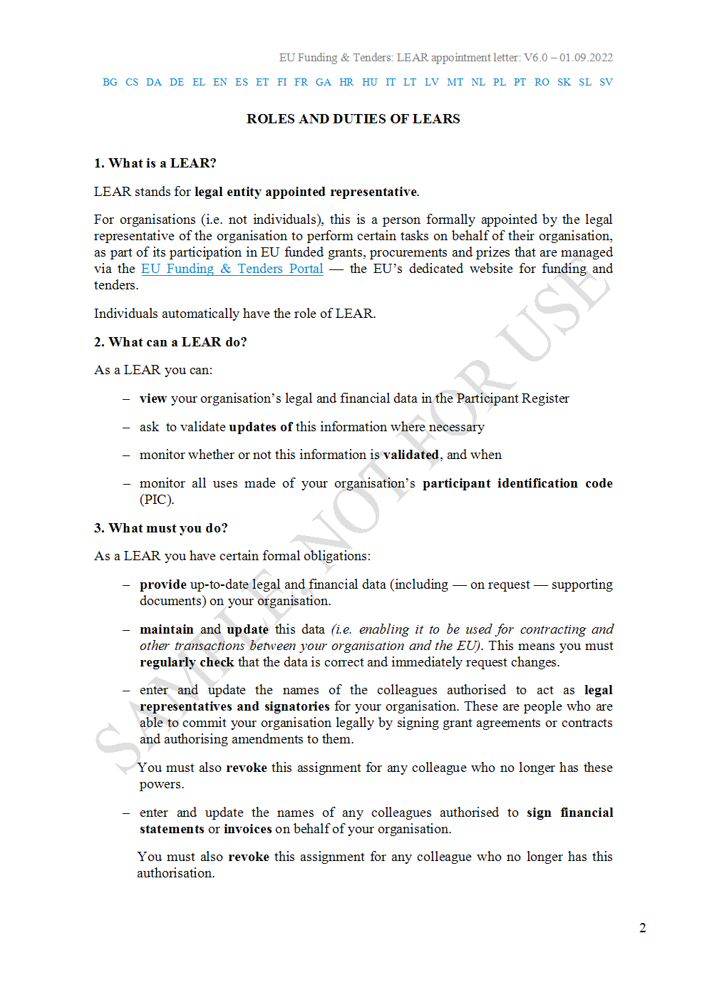
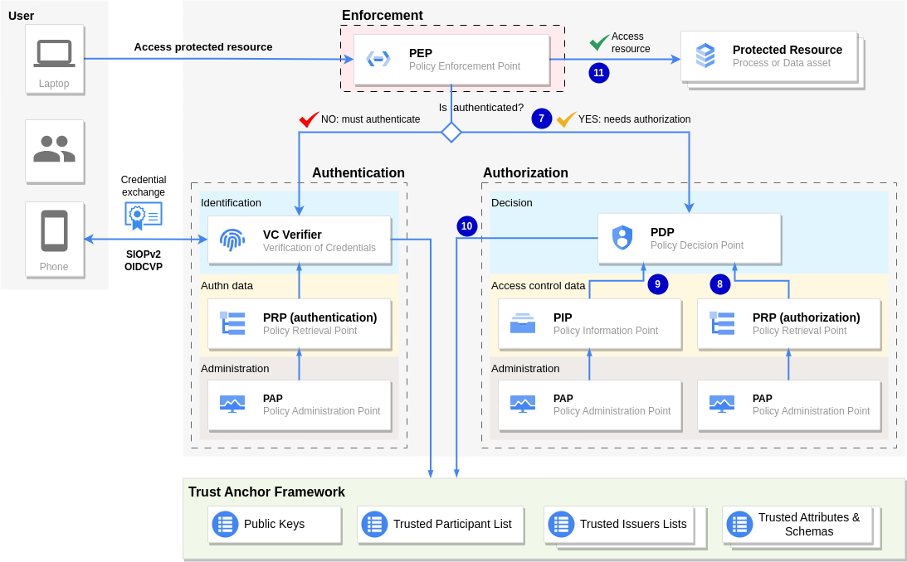

Authentication and authorization of entities acting on behalf of legal persons with Verifiable Credentials under eIDAS framework
Implementing efficient Powers of Representation with the LEAR Credential and did:elsi
We describe a mechanism for efficient Decentralised Identity and Access Management in B2B ecosystems, enabling a high level of legal certainty, reduced manual processes and reduced dependency on third parties for the operation of the ecosystem. The mechanism uses eIDAS X.509 certificates issued by a qualified trust service provider (QTSP), combined with advanced or qualified signatures and seals of Verifiable Credentials, to implement an eMandate document (delegation of powers) which can be used for authentication and authorisation using the delegated powers inside the credential.
The mechanism enables authentication and access control of entities acting on behalf of a legal person with much more descriptive power and flexibility than trying to use just X.509 certificates of representation, and in a more efficient and automated way than using just signed PDFs.
The mechanism is aligned with the upcoming EDIW (European Digital Identity Wallet) and its supporting eIDAS2 regulation, but it advances the state of the art by focusing entirely on legal persons with an implementation that can be used today without the need to wait for future supporting regulation.
In particular, we support natural persons acting on behalf of legal entities (e.g., employees or contractors of a business), interacting with other legal entities. The mechanism is not recommended for natural persons acting as citizens, even if technically the mechanism could be adapted. For citizens we recommend to wait for eIDAS2 and EDIW.
The mechanism leverages Verifiable Credentials and the existing eIDAS framework by:
- making the credential a machine-readable e-mandate by embedding authorisation information in the credential (in the form of delegation of powers) using a formal language and binding it to the identities of the issuer and subject.
- making the credential a legally binding document under the [eIDAS] framework, by signing the credential with an advanced or qualified seal/signature.
- making the credential an authentication mechanism, by binding the identities of the subject and holder of the credential so it can be used for authentication.
In this way, the credential is a legally binding machine-readable document where the issuer attests that it delegates the set of powers specified in the credential to the user identified as the subject of the credential.
The subject can then use the credential to authenticate to a Relying Party because the identities of holder and subject of the credential are bound to the same identity.
This mechanism leverages the eIDAS trust framework using advanced or qualified signatures and seals to provide a high level of legal certainty and enjoying the presumption of non-repudiation in the courts, something that does not happen when using other types of basic signatures.
1. Problem Statement
Representation powers and mandates are an essential element for businesses establishing relationships with other businesses, governments and customers, because in many cases natural persons act on behalf of legal persons and depending on the sensitivity of the involved data/processes the Relying Party may want to enforce a high level of legal compliance and reduce associated legal risks.
Electronic powers of representation and mandates are an explicit objective of the European Digital Identity Wallet (EDIW) and the proposed amendment to eIDAS to support it:
To achieve simplification and cost reduction benefits to persons and businesses across the Union, including by enabling powers of representation and e-mandates, Member States should issue EDIWs relying on common standards and technical specifications to ensure seamless interoperability and to adequately increase the IT security, strengthen robustness against cyber-attacks and thus significantly reduce the potential risks of ongoing digitalisation for citizens and businesses.
—[eIDAS2-Regulation]
The traditional way to solve the problem of powers of representation is by using cumbersome processes associated to onboarding and Know-Your-Customer (KYC) procedures, in many cases manual processes and paper/PDF documents that the Relying Party verifies until it is satisfied with the level of legal risk assumed when allowing a Principal to access some services on behalf of the Participant. Those setup processes are normally cumbersome, slow and people-intensive, creating a lot of friction in the initial stages of using a service, especially when strong identification is required by the nature of the service.
Standard eIDAS certificates of representation can help (see an example Certificate of Legal Entity Representative issued by a qualified trust service provider), but they tend to be for natural persons with full powers of representation, or for very standard use cases.
For a more granular specification of the powers of a natural person when acting on behalf of a legal person, other solutions have been implemented in different Member States, but they are typically centralised, non-interoperable among countries and limited to the services provided by the Public Administration. In the private sector there is not any standardised solution and basically every company does it their own way.
Verifiable Credentials can be a good instrument to implement a machine-readable and legally-binding e-mandate with much more descriptive power and flexibility than trying to use just certificates of representation, while maintaining the same level of compliance and legal risk than with traditional processes, and this is the reason why it is included in the objectives of the upcoming eIDAS2 regulation.
However, currently there are important barriers that hinder the adoption of an EU-wide solution for cross-border transfer of representation information, one of the most relevant being the lack of a common semantic framework.
Representation is complex, and electronic mandates schemes and policies are basically national and usually do not contemplate the possibility to use those mandates in cross-border scenarios. The problem of mandates when accessing services from a Public Administration is extremely complex, so we focus here on the private sector: when the Relying Party is a legal person from the private sector.
In order to have a simple, flexible and powerful mechanism using Verifiable Credentials, the main requirements are the following:
- REQ-01: The credential is an e-mandate, by embedding authorisation information in the credential and binding it to the identities of the issuer and subject. We call such a credential a "Verifiable Authorisation".
There must be a controlled vocabulary that can be used to express in a formal language (e.g. ODRL) the semantics of the powers delegated to a Principal by the Participant.
- REQ-02: The Relying Party does not have to know in advance the Principal accessing its services on behalf of a Participant.
However, the Relying Party should have an easy authentication mechanism based on Verifiable Credentials to ensure that the entity accessing the services is the same entity identified in the e-mandate, and so that it has the required powers to access the service.
Ideally, to simplify the authentication and authorisation process for the Relying Party, the same credential that is a mandate (we call it a Verifiable Authorisation) can be used for authentication (we call it a VerifiableID). Of course, we could use different credentials and even a "traditional" authentication mechanism, but having a single credential that can be used both for authentication and authorisation (using the powers specified in the mandate) is what we describe here.
- REQ-03: There may be several Principals accessing the services of a Relying Party on behalf of the same Participant, and each Principal may have different powers assigned by the Participant that enable them to access different (possibly overlapping) sets of services with different privileges.
The Relying Party specifies the powers that need to be validated for each service (the scope the access is requested on, and the type of representation that the Service provider allows). Each individual service may require different sets of powers, at the sole discretion of the Relying Partly (of course always in synch with the agreement formalised with the Participant).
The Participant grants the authorisations to the Principals at its own discretion. Only the Principals that have the powers required by an individual service can access that service. The Participant may have more powers than strictly required (for example, full representation of the legal entity).
- REQ-04: The Relying Party can reduce the legal risks and associated costs of litigation in court by leveraging the presumption of non-repudiation associated to the use of an eIDAS advanced/qualified seal/signature for the Verifiable Credential.
Of course, the Relying Party is free to request from Participants other types of signatures, if it is willing to assume the higher level of legal risk. We define here a mechanism which can have the same level as a document with a handwritten signature (when using qualified electronic signatures/seals).
In this way the credential is a legally binding machine-readable document where the issuer (Participant) attests that it delegates the set of powers specified in the credential to the user identified as the subject of the credential (Principal).
- REQ-05: The Relying Party can verify that the issuer of the credential corresponds to a real-world identity which is fully accountable for the contents of the credential, without needing any additional third-party, trust framework or participant list associated to a given Data Space or Federation.
Using an eIDAS signature/seal for the credential, the current EU legal and trust framework in place since 2016 is enough for the Relying Party to verify that the Participant has issued a legally-binding mandate to the Principal.
With all these properties, the credential is a legally binding machine-readable document where the issuer attests that it delegates the set of powers specified in the credential to the user identified as the subject of the credential. The subject can then use the credential to authenticate to a Relying Party because the identities of holder and subject are bound.
This mechanism leverages the eIDAS trust framework using advanced or qualified signatures and seals to provide a high level of legal certainty and enjoying the presumption of non-repudiation in the courts, something that does not happen when using other types of basic signatures.
2. Introduction to Authentication and Authorization with Verifiable Credentials
In a typical B2B ecosystem, the agreements between a product/service provider and the consumer are formalised among legal persons (also known in this document as 'organisations').
However, when interacting in the context of execution of the agreement, typically other entities are acting on behalf of the legal persons both for the consumer organisation and for the service provider organisation.
For example, an employee of the consumer organisation may start, on behalf of his employer, an interaction with the provider organisation to perform a process needed for the procurement and provision of a service. In this case, the provider organisation should authenticate the natural person and apply appropriate access control policies to ensure that the natural person is really entitled by the consumer organisation to perform the intended process.
Another example is when a device, server machine or a service controlled by the consumer organisation interacts with a service provider in an automated way (“controlled” means in this context that the device, machine or service is operating under the responsibility of the legal person). Before allowing the entity to access protected resources, the provider organisation should authenticate the entity and apply appropriate access control policies to ensure that the entity is really entitled by the consumer organisation to perform the intended process.
In the context of authentication and access management, the legal person acting as consumer organisation will be named Participant. The digital representation of an entity acting on behalf of a Participant is referred to as a Principal. In Human-to-Machine (H2M) scenarios, the Principal is a natural person (typically an employee or contractor), while in Machine-to-Machine (M2M) scenarios the Principal can be a device, an application or any other automated entity without legal personality under eIDAS. However, when the context is clear and we need to refer to eIDAS legal terms, we will use the term user (defined in the Glossary) to denote a natural or legal person, or a natural person representing a legal person using a wallet to authenticate.
The legal entity acting as service provider and performing authentication and access management will be called Relying Party.
The approach is similar to the on-behalf-of actor model described in [Actor-DataSpaces] but our focus is on the compliance with the eIDAS legal framework to enable not only Data Spaces but any type of ecosystem to leverage the eIDAS trust framework and achieve a high level of legal certainty with the presumption of non-repudiation in the courts.
The mechanism described here allows a Relying Party receiving a Verifiable Credential from a principal engaging in an authentication process to perform the following verifications:
- Authentication
-
- Non-tampering. The Relying Party can verify that the credential was not tampered with since it was generated, thanks to the digital signature of the credential.
- Binding the Principal with the subject inside the credential. The Relying Party can verify that the principal presenting the credential is the same principal identified as the subject inside the credential by using the cryptographic material inside the credential that was embedded in a secure and private way during the credential issuance process. See section Authentication requires a VerifiableID for more details.
The degree of trust in this verification depends on the degree of trust that the Relying Party puts on the processes that the Participant uses to issue the credentials.
However, as described below, the usage of eIDAS signatures to sign the credential makes the Participant legally liable for any problems in the binding of the identities of the holder and subject of the credential. Specifically, compliance to the eIDAS specifications and regulation for electronic seals and signatures provides presumption of non-repudiation and the burden of disputing it in the courts rests on the Participant, not on the Relying Party.
This is important because it provides the incentives in the proper places: the Participant is incentivised to create the credential in the proper way, and the Relying Party is incentivised to perform its due diligence in verifying the credential. By using the eIDAS signatures, no party has to assume the burden if the technical validity of the signature is disputed in court. Only the contents of the credential can be under discussion. See section Signature of the Verifiable Credentials for more details.
In the mechanism described here, the verification is enabled by embedding inside the credential a public key corresponding to a private key that was generated by the principal during the issuance process. See below for the details, including an optional mechanism by embedding an existing eIDAS certificate issued by a QTSP when the principal is a natural person or a legal person (different from the Participant).
- Binding of issuer with a real-world identity. The Relying Party can verify that the credential was issued by somebody controlling a private key associated to a given real-world identity.
The verification is enabled because the Verifiable Credential is sealed with an eIDAS qualified certificate for electronic seal issued to the Participant by a qualified trust service provider (QTSP) in the [EU_Trusted_Lists], and the signature of the credential is an advanced or qualified electronic signature using the [JAdES] format (JSON Advanced Electronic Signature) as defined in the eIDAS regulation.
Of course, we also support electronic signatures with qualified certificates for electronic signatures issued by QTSPs to natural persons acting as representatives of legal persons.
This verification ensures that an organisation with a real-world legal identity under the eIDAS Trust Framework has signed the credential being presented by a natural person identified as the subject of the credential.
This verification does not say anything about whether the organisation is a participant in a given Data Space or not. See next point for such verification.
- Verify that the real-world identity is a Participant. The Relying Party, using the unique identifier in the eIDAS certificate used to sign the credential, can check if the issuer of the credential is a participant in a given ecosystem by looking for that unique identifier in the Trusted Participant List managed by that ecosystem.
This unique identifier is the unique
organizationIdentifierdefined in [ETSI-LEGALPERSON], which is inside the certificates for legal persons and certificates for natural persons acting as representatives of legal persons.Any legal person that can already engage in electronic transactions in the internal market can have an eIDAS certificate including such a unique identifier, which is used in all types of legally-binding signatures like invoices, contracts, etc.
We assume here that the onboarding process of each ecosystem does not invent a new "local-only" identifier but uses the one that is already valid for electronic transactions in the internal market. Or at least, that the global eIDAS unique identifier is associated with whatever private identifier is invented by the ecosystem.
We assume that the eIDAS unique identifier is used during onboarding to update a given Trusted Participant List with the identity of the new participant. That identity is composed of the unique identifier in the eIDAS framework and any additional attributes that may be relevant for the ecosystem. See below for the structure of the unique eIDAS identifier.
- Access Control
-
- Binding the Participant to the delegated powers to the Principal. The Relying Party can verify that the legal person (the Participant) or a representative of the legal person (in eIDAS terms) has delegated a specific set of powers to the subject identified inside the credential (who is the same person holding and presenting the credential, as described above in 'authentication').
This is enabled because the credential includes a set of claims that state in a formal language the delegated powers, and the credential has been sealed/signed using an eIDAS certificate using the eIDAS advanced/qualified electronic signature format, described in more detail later in this document.
Alternatively, the credential can include a pointer to an external document (which could be another credential) describing in detail the delegated powers. In this case, the linking mechanism should provide a tamper-evident mechanism to avoid undetected modifications to the original external document, for example using [Cryptographic Hyperlinks].
Thanks to the usage of eIDAS signatures, the credential is effectively a legal document with the same legal validity as any other document in any format supported by the eIDAS signature scheme. The Relying Party can verify (and prove in court if needed) with a high level of legal certainty that the legal person issuing the credential (the Participant) has declared that the holder/subject of the credential has the powers stated inside the credential (or linked by the credential).
Actually, the entity identified as a subject in the credential, and that is receiving the delegated powers, is not restricted to be a natural person and can be of different types. Anything that can be expressed in paper or PDF format can be also expressed in the Verifiable Credential format. For example, it can be an employee, a customer or a machine or device under the responsibility of the legal person signing the credential.
- The Relying Party can use the claims mentioned above, expressed as a formal language (e.g. [ODRL]), to perform access control. The specific mechanism is not in the scope of this document.
For example, the credential can just specify the role(s) of the entity identified in the credential (e.g. 'finance administrator' for an employee, 'gold customer' for a customer, 'humidity sensor' for a machine) and the Relying Party can evaluate a set of arbitrarily complex policy rules associated to the role(s) for access control.
Alternatively, the credential could specify more complex rules which the Relying Party can combine if needed with additional policy rules to make the final decision.
- Binding the Participant to the delegated powers to the Principal. The Relying Party can verify that the legal person (the Participant) or a representative of the legal person (in eIDAS terms) has delegated a specific set of powers to the subject identified inside the credential (who is the same person holding and presenting the credential, as described above in 'authentication').
To achieve all of the above, we define specific types of Verifiable Credentials with a format and a mechanism which specify:
- a way to sign the credentials;
- a way to bind the identity of the holder of a credential to the identity of the subject inside the credential;
- and a way to embed authorisation information in the credential describing the powers that the legal entity has delegated to the subject inside the credential.
The mechanisms described here can be used to generate credentials to employees, contractors, customers and even to machines and devices acting on behalf of an organisation. The schema is identical, except the issuance process is probably a little bit different and the roles and duties embedded in the credentials have different legal implications (but always in line with the legal framework, for example with the Consumer rights directive).
2.0. Signature of the Verifiable Credentials
We use a qualified certificate for electronic seal provided by an eIDAS qualified trust service provider (QTSP) to seal credentials with an advanced electronic seal (AdESeal) or qualified electronic seal (QESeal) with the JSON Advanced Electronic Signature format ([JAdES]).
We also use a qualified certificate for electronic signature issued by a QTSP to authorised representatives of the legal person, to sign credentials with an advanced electronic signature (AdES) or with a qualified electronic signature (QES) with the JSON Advanced Electronic Signature format (JAdES).
This is described in the following figure:

This mechanism for sealing/signing the Verifiable Credentials has the following properties:
- Provides high assurance of the identity of the creator of the credential.
-
The seals/signatures provide high assurance of the identity of the creator of the credential. For example, it will be difficult for a malicious user to obtain a qualified seal certificate in the name of a company, because the QTSP will be responsible to check that such a seal is issued to the persons representing the company and not to unauthorised persons.
- Enables authorised representatives of the legal person to act on behalf of the legal person.
-
The mechanism provides high legal predictability, including for the qualified electronic signature the benefits of its legal equivalence to handwritten signatures.
As stated by the eIDAS Regulation, when a transaction requires a qualified electronic seal from a legal person, a qualified electronic signature from the authorised representative of the legal person should be equally acceptable.
It is possible to certify elements that are bound to the signatory such as a title (e.g. Director), a link with its employer, etc. Because the QTSP is trusted for verifying the information it certifies, the Relying Party can get a high level of confidence in such information conveyed with the signature through the signatory's certificate.
In this way, the Relying Party receiving Verifiable Credentials can have the same legal certainty than with any other document in other formats (e.g. PDF) signed with AdES or QES signatures or with handwritten signatures (in the case of QES).
- Provides a high level of legal certainty and interoperability.
-
Any basic signature benefits from the non-discrimination rule, which means that a Court in an EU Member State cannot reject it automatically as being invalid simply because they are in electronic form.
However, their dependability is lower than that of an AdES/AdESeal or QES/QESeal because the signatory may be required to prove the security of the technology being used if the validity of the signature is disputed before a court. This requires significant costs and efforts that could be avoided with relative ease by opting for the more established and standardised advanced and qualified signature solutions. It may also be the case that the relying parties have no applications or tools to validate such signature, when not based on standards; in such a scenario, the signature may be legally valid and technologically robust, but of limited use (see [ENISA-Qualified Electronic Signatures] and [ENISA-Qualified Electronic Seals]).
For these interoperability reasons, QES/QESeal that are based on recognised EU standards are preferable unless the parties operate purely in a local context where the acceptance and usability of the chosen signature solution is sufficiently certain.
Beyond the technical interoperability, the eIDAS Regulation also ensures the international recognition of electronic signatures, and not limited to the EU.
2.1. A taxonomy of Verifiable Credentials
The objectives defined in the introduction can be achieved in different ways. We define here an approach that standardises the detailed mechanisms so it can be adopted easily by anyone who wants to obtain the associated benefits. If the approach is adopted in an ecosystem, it provides a high level of interoperability among the participants in the ecosystem, reducing also the risks associated with mistakes in the implementation.
To describe precisely the approach, we define a taxonomy of the relevant classes of Verifiable Credentials that we need.
For the purpose of this discussion we use a diagram derived from the taxonomy defined in EBSI:

And this is the chain of trust from the "Authentic sources" to the credential that the employee (for example) holds.

The sections below refer to this diagram for each type of credential discussed.
2.2. Authentication requires a VerifiableID
Not all types of Verifiable Credentials can be used as a mechanism for online authentication, because the Relying Party (the entity receiving the Verifiable Credential in an authentication process) needs to bind the identity of the user sending the credential to the claims attested about the subject inside the credential.
For example, in the case of a Diploma as a Verifiable Credential (a Verifiable Diploma), the credential is a Verifiable Attestation which indicates that the subject has certain skills or has achieved certain learning outcomes through formal or non-formal learning context. However, as in the case with normal Diplomas in paper of PDF format, this credential can be presented by anyone that holds the credential. In other words, the credential binds the identity of the subject with the claims inside the credential, but does not bind the identity of the holder of the credential with the identity of the subject of the credential, which requires a special mechanism in the issuance process.
Most Verifiable Credentials will be issued as Verifiable Attestations, acting as efficient machine-processable and verifiable equivalent to their analog counterparts. Their purpose is to attest some attributes about the subject of the credential and not act as a mechanism for online authentication.
Instead, a VerifiableID is a special form of a Verifiable Credential that a natural or legal person can use in an electronic identification process as evidence of whom he/she/it is (comparable with a passport, physical IDcard, driving licence, social security card, member-card…).
VerifiableIDs can be of different types and be issued by different entities with different levels of assurance (in eIDAS terminology). They are issued with the purpose of serving as authentication mechanisms in online processes. In the near future, VerifiableIDs of the highest level of assurance (LoA High) will be issued to citizens and businesses by their governments under eIDAS2.
We describe in this document a way to issue VerifiableID credentials and how a Relying Party can perform authentication by accepting that credential.
2.3. Access Control requires a Verifiable Authorisation
Once the user is authenticated, the system should make a decision to grant or reject an access request to a protected resource from an already authenticated subject, based on what the subject is authorised to access.
Let's take the example of when a Service Provider signs an agreement with a Service Consumer organisation (a legal person), and the Service Provider wants to allow access to some services to employees of the Consumer organisation under the conditions of the agreement.
In most cases, granting access is not an all-or-nothing decision. In general, the agreement between the Service Provider and Service Consumer specifies that only a subset of the employees of the Consumer organisation can access the services, and even in that subset not all employees have the same powers when accessing the services. For example, some employees have access to the administration of the service, some can perform some create/update/delete operations in a subset of the services, and some employees can only have read access to a subset of the services.
To allow for this granularity in an authentication and access control process, in general the entity willing to perform an action on a protected resource has to present (in a Verifiable Presentation) a VerifiableID and possibly one or more additional Verifiable Attestations.
At least one of the credentials should include claims identifying the employee (or any other subject) and a formal description of the concrete powers that have been delegated by the legal representative of the organisation, enabling the determination by the Service Provider whether the user is entitled to access a service and the operations that the user can perform on that service.
We define later a standard mechanism and format for a Verifiable Credential that enables this functionality in a simple, secure and with high degree of legal certainty compatible with eIDAS.
Such a credential is called a Verifiable Authorization, represented in the figure above.
2.4. Combining VerifiableID and Verifiable Authorisation in the LEARCredential
In many use cases, it is possible to simplify the authentication and access control by combining in a single credential both a VerifiableID (for authentication) and a Verifiable Authorisation (for access control).
We call the resulting credential a LEARCredential and it is very useful when the holder/subject wants to use a decentralised IAM mechanisms implemented by Relying Parties which are federated in a decentralised way using a common Trust Anchor Framework.
We repeat here the taxonomy diagram to facilitate the description of the LEARCredential.
The subject identified in the credential can authenticate to perform a protected process by using a special type of Verifiable Credential called LEARCredential (from Legal Entity Authorised Representation).
To achieve a high level of legal certainty under eIDAS, the LEARCredential is:
- signed or sealed with an eIDAS certificate which is either:
- a certificate for electronic seals issued to a legal person by a qualified trust service provider, or
- a certificate for electronic signatures, issued to a legal representative of the legal person by a qualified trust service provider.
- signed using the JSON Advanced Electronic Signature format described in [JAdES]
The LEARCredential includes claims identifying the subject of the credential and a description of the concrete powers that have been delegated by the legal representative of the organisation.
By signing/sealing the credential with an eIDAS certificate, the legal representative attests that the powers described in the credential have been delegated to the subject (maybe under some conditions, also described in the credential).
In this way, the LEARCredential has the same legal status as any other document in other formats (e.g., PDF) signed in an eIDAS-compliant way, but with all the advantages provided by the Verifiable Credential format.
In addition, the LEARCredential includes cryptographic material that allows the subject of the credential to use the credential as an online authentication mechanism in a portal or API, by proving that the holder of the credential is the same entity identified in the credential.
Any Verifier that trusts the eIDAS Trust Framework will be able to verify that:
- The entity presenting the LEARCredential (the holder) is the same as the one identified in the subject of the credential
- A legal representative of the organisation has attested that the subject has the powers described in the credential
This enables the entity presenting the LEARCredential to start the process and to provide any additional required documentation as additional Verifiable Credentials to enable automatic verification of compliance with the process requirements (including Gaia-X credentials issued by the Compliance Service of Gaia-X).
Both types of eIDAS certificates mentioned above are an electronic attestation that links electronic seal/signature validation data to a legal person and confirms the name of that person. This way, the certificate, usually linked to the sealed/signed document, can be used to verify the identity of the creator of the seal/signature and whether the document has been sealed/signed using the corresponding private key.
Before issuing a certificate like the above, the qualified trust service provider (QTSP) performs validations against Authentic Sources to authenticate the identity of the organisation under the eIDAS framework:
- The data concerning the business name or corporate name of the organisation.
- The data relating to the constitution and legal status of the subscriber.
- The data concerning the extent and validity of the powers of representation of the applicant.
- The data concerning the tax identification code of the organisation or equivalent code used in the country to whose legislation the subscriber is subject.
The person controlling the above certificates can authorise a subject to perform some operations on behalf of the organisation (LEAR) by generating and signing a Verifiable Credential which:
- Includes identification data of a subject
- Includes claims stating the delegation of specific powers to perform a set of specific processes on behalf of the organisation
- Includes a public key where the corresponding private key is controlled by the subject, enabling the subject to prove that she/he/it is the holder of the credential when it is being used in an authentication process like the ones used as examples in this document.
The LEARCredential uses the did:elsi method for the identifiers of legal persons involved in the process, to facilitate the DID resolution and linkage with the eIDAS certificates. The did:elsi method is specified in [DID-ELSI]. But any other suitable DID method can be used if desired.
The high-level view of the process is described in the following diagram, where the legal entity representative of a company appoints an employee to perform some processes with a third party (the Relying Party):

2.5. Introduction to the LEARCredential through an example
In this section we describe in detail the LEARCredential and for illustrative purpose we use example attributes from a fictitious ecosystem whose participants are described in Appendix Example scenario: DOME Marketplace.
In this example the LEARCredential will be generated using the eIDAS certificate of representation of the COO (Chief Operation Officer) of the organisation that will be issuing the credential (GoodAir).
The credential will be generated with an application that the COO will use as Issuer of the LEARCredential and that allows the employee to receive the credential using his credential wallet, using [OpenID-VCI] to achieve compliance with the EDIW Wallet ARF.
This application enables the COO to attest the information required to create the LEARCredential, specifying the employee information and the specific type of LEARCredential. In general, there may be different instances of LEARCredentials for different purposes. One employee can have more than one LEARCredential, each having a different delegation of powers for different environments.
The specific detailed use case here is the issuance of a LEARCredential to an employee to enable that employee to perform the onboarding process in an ecosystem. But exactly the same process with different attested attributes can be used by any organisation to issue credentials that can be accepted by other organisations for authentication and access control to any protected resources that they manage.
The essential components of a LEARCredential are the following:
- Claims identifying the employee who is appointed to be a LEAR
- DID of the employee to enable authentication
- Claims identifying the legal representative
- The specific powers delegated by the legal representative to the employee
- Advanced/Qualified signature of the credential
These concepts are elaborated in the following sections. To facilitate understanding of the concepts and how the LEAR Credential maps with the equivalent mechanism used today with PDFs, we use the textual documents that are used for enrolling an organisation in the European Commission Funding & tenders system. The forms we use as example are the ones required by the Commission to enable an organisation to appoint a Legal Entity Appointed Representative (LEAR). This is precisely the origin of the name we use for the LEAR Credential.
However, one difference is that in the example we will generate a LEAR Credential which can be used to interact with the DOME Marketplace described in Appendix Example scenario: DOME Marketplace, instead of with the Funding & tenders portal.
2.5.0. Claims identifying the employee (the mandatee)
These are claims identifying the subject of the credential, the person who will act as LEAR. Each ecosystem can define their own depending on their specific requirements.
In addition, each organisation can specify their own for enabling access to its products/services. However, it is recommended to use a set of claims that are agreed upon by all participants in the ecosystem unless there are specific requirements for not doing so. This includes not only the amount of claims but also their syntax and semantics.
The relevant section of the document for the EU Commission Funding & tenders portal is shown here:

From the above form we can derive the following claims using the example data:
"mandatee": { "title": "Mr.", "first_name": "John", "last_name": "Doe", "gender": "M", "email": "johndoe@goodair.com", "mobile_phone": "+34787426623" }
2.5.1. DID of the employee
In this example we use the did:key method for the DID of the employee, which provides a very high level of privacy and given the way the LEARCredential is generated it supports the verification of the chain of responsibility with a proper level of guarantee.
If the highest levels of assurance and legal compliance are desired and the employee has an eIDAS certificate for signatures (in this case a personal one would be enough, not one like the COO), we could use the elsi:did method for identification of the employee. However, the organisation (GoodAir in our example) should make sure that the employee is aware of and agree to the possible privacy implications of doing so, given the personal details leaked from the eIDAS certificate. In any case, if the business interactions the the employee will perform already require some personal details to be in the LEAR Credential (as in the example with the EU Commission used here), using an eIDAS personal certificate of the employee should not be a problem. However, we keep using the did:key identifier for the employee, to show how the system can work with it and ensure complete privacy if required.
Those personal details are exactly the same as if the employee signs any document with a digital certificate, but care should be taken by the organisation because in this case the signature would be done "on behalf of" his employer and not as an individual personal action.
Even though this is not unique to the did:elsi method, this also implies that the onboarding service has to handle those personal details in the same way as if it would be accepting any other document signed with a certificate for signatures, and ensure compliance with GDPR. This is "business as usual" when using digital signatures, but we want to make sure that this is taken care of when implementing the authentication and access control mechanisms described in this document.
This DID for the employee is an additional claim to the ones presented above, using the id field in the credentialSubject object.
Using this DID method has an additional advantage: the DID identifier corresponds to a keypair that is generated during the LEARCredential issuance process, where the private key is generated by the wallet of the employee and it is always under his control.
This private key controlled by the employee can be used to sign challenges from Relying Parties that receive the credential to prove that the person sending the credential is the same person that is identified in the credentialSubject object of the LEARCredential.
It is this property that makes this credential a VerifiableID that can be used for online authentication.
An example DID for the employee could be:
{
"id": "did:key:z6MkhaXgBZDvotDkL5257faiztiGiC2QtKLGpbnnEGta2doK"
}
In this example, the signatures performed with the private key can not be JAdES-compliant ([JAdES]), but if the LEARCredential is attached to any other credential that is signed with this private key, then they can be traced up to the eIDAS certificate of the COO and so the chain of responsibility can be determined, up to the root of trust which is the identity of the trust service used by the QTSP that issued the eIDAS certificate of the COO of the company.
With the DID for the employee, the set of claims identifying him would be then:
"mandatee": { "id": "did:key:z6MkhaXgBZDvotDkL5257faiztiGiC2QtKLGpbnnEGta2doK", "title": "Mr.", "first_name": "John", "last_name": "Doe", "gender": "M", "email": "johndoe@goodair.com", "mobile_phone": "+34787426623" }
2.5.2. legalRepresentative (the mandator)
This section identifies the natural person (the COO of GoodAir in our example) who is a legal representative of the legal person (GoodAir) and that is nominating the employee identified in the credential.
"mandator": { "cn": "56565656V Jesus Ruiz", "serialNumber": "56565656V", "organizationIdentifier": "VATES-12345678", "o": "GoodAir", "c": "ES" }
2.5.3. Roles and Duties of the LEAR: the powers of representation
The LEARCredential should include a formal description with specific powers that are delegated by the legal representative (mandator) to the employee (mandatee). In the example with the LEAR for the EU Funding & tenders portal, it corresponds to the roles and duties of the LEAR. The analog description in our example, which uses natural language is:

When we translate this section to a formal language to represent powers of representation, the object inside the credential could be:
"mandate": { "id": "bb1482e1-0513-4c90-9c80-98a2e4d14984", "mandator": { "cn": "56565656V Jesus Ruiz", "serialNumber": "56565656V", "organizationIdentifier": "VATES-12345678", "o": "GoodAir", "c": "ES" }, "mandatee": { "id": "did:key:z6MkhaXgBZDvotDkL5257faiztiGiC2QtKLGpbnnEGta2doK", "title": "Mr.", "first_name": "John", "last_name": "Doe", "gender": "M", "email": "johndoe@goodair.com", "mobile_phone": "+34787426623" }, "power": [ { "id": "53493323798", "tmf_type": "Domain", "tmf_name": ["DOME"], "tmf_function": "Onboarding", "tmf_action": ["Process"] } ], "lifeSpan": { "startDateTime": "2023-10-01", "endDateTime": "2025-10-01" } }
In the above example, we have specified that the mandator (the legal representative) has delegated to the mandatee (the employee) one single power to access services in the DOME ecosystem (specified with the fields type and name) with the specific capability to perform the onboarding of the company in the DOME ecosystem (specified with the fields functionand action). The actual data model, which can be used to express mor complex delegations is described in more detail in another section of the document.
2.5.4. Assembling the pieces together
With the above values for the example, the complete LEARCredential would become something like this:
{
"@context": [
"https://www.w3.org/ns/credentials/v2",
"https://dome-marketplace.eu/2022/credentials/learcredential/v1"
],
"id": "urn:did:elsi:25159389-8dd17b796ac0",
"type": ["VerifiableCredential", "LEARCredentialEmployee"],
"issuer": {
"id": "did:elsi:VATES-12345678"
},
"issuanceDate": "2024-03-22T14:00:00Z",
"validFrom": "2024-03-22T14:00:00Z",
"expirationDate": "2025-03-22T14:00:00Z",
"credentialSubject": {
"mandate": {
"id": "bb1482e1-0513-4c90-9c80-98a2e4d14984",
"mandator": {
"cn": "56565656V Jesus Ruiz",
"serialNumber": "56565656V",
"organizationIdentifier": "VATES-12345678",
"o": "GoodAir",
"c": "ES"
},
"mandatee": {
"id": "did:key:z6MkhaXgBZDvotDkL5257faiztiGiC2QtKLGpbnnEGta2doK",
"title": "Mr.",
"first_name": "John",
"last_name": "Doe",
"gender": "M",
"email": "johndoe@goodair.com",
"mobile_phone": "+34787426623"
},
"power": [
{
"id": "53493323798",
"tmf_type": "Domain",
"tmf_domain": ["DOME"],
"tmf_function": "Onboarding",
"tmf_action": ["Process"]
}
],
"lifeSpan": {
"startDateTime": "2024-03-22T14:00:00Z",
"endDateTime": "2025-03-22T14:00:00Z"
}
}
}
}
3. Authenticating with Verifiable Credentials
We focus here on how to perform authentication using Verifiable Credentials. Access control is the subject of another section.
Authentication requires a special type of Verifiable Credential called a VerifiableID. For the examples illustrating the mechanism we will use a LEARCredential, which is at the same time a VerifiableID and a Verifiable Authorization. The LEARCredential is a powerful mechanism that can be used both for authentication and sophisticated access control. In this section we will focus only on authentication using the LEARCredential.
To make the description concrete and more understandable, we describe how the system works in DOME. But the system is general enough to be used in any other environment with similar requirements.
The authentication mechanism supports both Human-To-Machine (H2M) and Machine-To-Machine (M2M) flows, which are described in the next sections.
3.0. Authentication in Human-To-Machine scenarios
For completeness, the figure below describes at a high level how both H2M and M2M flows work. This section describes the H2M flow and M2M is described in the next.
For the explanation, we will asume that there is a user who wants to interact with a web Application using her Internet browser in her PC/Laptop. The user has a VerifiableID (the LEARCredential) in her EUDI-compatible Wallet, and the application has integrated the mechanism provided by DOME to authenticate with Verifiable Credentials (if they are a VerifiableID, as explained above in this document).
DOME provides a component (the VCVerifier), which makes very easy for applications to integrate authentication with Verifiable Credentials. If the application programmer knows how to use Social Login, then she already knows who to integrate authentication with Verifiable Credentials.
For the Application, the VCVerifier is just an OpenID Provider (OP), connecting to it using the standard OpenID Connect protocol.
The Application is an OIDC Relying Party requiring End-User Authentication and Claims from the VCVerifier (we will see later how exactly). The Application does not need any knowledge about how to talk to the Wallet to receive the Verifiable Credential from the user. This complexity is hidden from the application by the VCVerifier.
Once the Verifier has successfully authenticated the user and received the Verifiable Credential from her Wallet, it returns to the Application (using the standard OpenID Connect protocol) both the Verifiable Credential and an Access Token that the Application can use to access protected resources as in any other OpenID Connect flow.
The Application receives the Verifiable Credential as a claim (JSON object) via the flows of OpenID Connect, so the only knowledge that the Application needs is the structure of the Verifiable Credential, to be able to use the information inside to know who is the authenticated user and the powers of that user. This is no different from using the "Login with Google" or "Login with Facebook" buttons, where the Application needs to know the structure of the claims that it received from those OpenId Providers.
The following sections provide more details on the flows.
3.0.0. Starting the authentication process
The user interacts with the web interface of the Application, and at some point the Application wants to authenticate the user so it presents a "Login" button, to authenticate with a Verifiable Credential which in our case will be a LEARCredential issued to the user. This authentication mechanism can coexist with other mechanisms, if the application implementer wants.
We will use interchangeable the terms Relying Party and Application, because in this context the Application adopts the role of OIDC Relaying Party.
When the user clicks the "Login" button, the application redirects the user to the VCVerifier, which will authenticate the user and request the LEARCredential. The Relying Party tells the VCVerifier which is the concrete Verifiable Credential that is requesting via the scope parameter of the OIDC Authentication Request that is sent to the VCVerifier.
The VCVerifier then starts an OpenID for Verifiable Presentations flow [OpenID-VP] with the Wallet of the user. In this context, the VCVerifier acts as a Relying Party and the Wallet as an OpenID Provider.
In other words, the VCVerifier has internally two components with different roles, depending on who is the other party:
- When talking with the Application, the VCVerifier is an OpenID Provider and the Application is a Relying Party.
- When talking with the Wallet, the VCVerifier is a Relying Party and the Wallet is an OpenID Provider.
In this way, the VCVerifier hides much of the complexity for both the Application and the Wallet in real-world authentication scenarios.
The detailed flow is as follows.

- 1 The User navigates with her Laptop/PC browser to access the web interface of the Application (we will call it the "portal" from now on).
We assume in this scenario a cross-device interaction, that is, the user accesses the portal services with a PC browser, but authentication is performed with a mobile using Verifiable Credentials, as in typical 2-factor authentication.
- 2 The browser sends a request to the portal web server.
- 3 The portal sends an Authentication Request to the authorization endpoint of the VCVerifier by redirecting the user to the corresponding page of the VCVerifier.
The Authentication Request MUST use the Authorization Code Flow, which means that all tokens (including the claims of the Verifiable Credential) are returned from the Token Endpoint.
The Authorization Code Flow returns an Authorization Code to the Client, which can then exchange it for an ID Token and an Access Token directly. The VCVerifier MUST authenticate the Client before exchanging the Authorization Code for an Access Token.
The Authorization Request MUST be signed by the Client, and MUST use the
request_uriparameter which enables the request to be passed by reference, as described in section 6.2. Passing a Request Object by Reference of the OpenID Connect spec.The
request_urivalue is a URL referencing a resource containing a Request Object value, which is a JWT containing the request parameters. This URL MUST use the https scheme.The following is an example HTTP 302 redirect response by the Client, which triggers the browser of the user to make an Authentication Request to the Authorization Endpoint of the VCVerifier (with line wraps within values for display purposes only).
HTTP/1.1 302 Found Location: https://verifier.dome-marketplace.org/authorize? response_type=code &client_id=did:key:wejkdew87fwhef9833f4 &request_uri=https%3A%2F%2Fdome-marketplace.org%2Fapi%2Fv1%2Frequest.jwt %23GkurKxf5T0Y-mnPFCHqWOMiZi4VS138cQO_V7PZHAdM &state=af0ifjsldkj&nonce=n-0S6_WzA2Mj &scope=openid%20learcredNote in the above Authentication Request the following:
client_idMUST be thedidassigned to the Client machine, either during configuration of the DOME infrastructure (e.g., the BAE Marketplace or the Ticketing system), or during onboarding of the CSP (one of the machines of the CSP).scopeMUST includelearcredentialin addition to the requiredopenid, so the VCVerifier knows that it has to request the LEARCredential from the Wallet. Other scopes can be defined for requesting other credentials, but this is out of scope of this document. To request a LEARCredential, thescopeparameter MUST have the value "openid learcredential".
- 4 At this point, the VCVerifier knows that it has to request a LEARCredential from the Wallet. Until now, the VCVerifier was acting as an OpenID Provider/Authorization Server for the Client. To talk to the Wallet, the VCVerifier has to use the OpenID for Verifiable Presentations (OID4VP) protocol, where the VCVerifier acts as a Client.
According to the OID4VP spec, the VCVerifier has to send an Authorization Request to the Wallet. This request should not be confused with the Authorization Request that the Application sent to the VCVerifier, even if they have the same name. Both are Authentications Requests, but in different contexts. They are related (the end result is to obtain a Verifiable Credential for the Application), but they are used between different components of the system.
The VCVerifier MUST use the flow defined in section 3.2. Cross Device Flow of the OID4VP spec, using a QR Code for the Authorization Request.
In particular, in order to keep the size of the QR Code small and be able to sign the Request Object, the actual Authorization Request MUST contain just a Request URI according to [RFC9101], which the wallet uses to retrieve the actual Authorization Request data.
The following is an example of an Authorization Request which refers to the Authorization Request Object through the request_uri parameter. The Authorization Request is displayed displayed to the End-User as a QR Code
openid4vp://?client_id=https%3A%2F%2Fverifier.dome-marketplace.org &request_uri=https%3A%2F%2Fverifier.dome-marketplace.org%2fauth_request%2F567545564 - 5 The QR code is displayed in the user browser with instructions to scan it and go to the URL inside it.
Example of the DOME Marketplace login screen - 6 The user scans the QR with her wallet and tells the wallet to go to the URL in the QR.
- 7 After confirmation by the user, the wallet performs a
GET /auth-requestto the endpoint that was in therequest_uriparameter inside the QR code. The reply to the GET request is an Authorization Request - 8 The VC Verifier creates an Authorization Request. The parameters comprising a request for verifiable presentations are described in detail in the section VCVerifier generates the Authorization Request
- 9 The Verifier replies to the wallet with the Authorization Request
3.0.1. VCVerifier generates the Authorization Request
The Authorization Request travels in the response body of the HTTP GET request performed in the previous point, as a JWT signed by the DOME onboarding service, using the eIDAS certificate for seals that corresponds to the legal person operating the service and with the JAdES signature format.
The parameters comprising a request for verifiable presentations are given in section 5 of [OpenID-VP] and are reproduced here with the particularities of this use case, in particular taking into account that this is a cross-device interaction:
- response_type (REQUIRED). Must be
vp_token. This parameter is defined in [RFC6749]. The possible values are determined by the response type registry established by [RFC6749]. The [OpenID-VP] specification introduces the response typevp_token. This response type asks the Wallet to return only a VP Token in the Authorization Response, which is what we want in our case. - response_mode REQUIRED. MUST be
direct_post. In this mode, the Authorization Response is sent to the VCVerifier using an HTTP POST request to an endpoint controlled by the VCVerifier. The Authorization Response parameters are encoded in the body using the application/x-www-form-urlencoded content type. According to the OID4VP spec, the flow can end with an HTTP POST request from the Wallet to the Verifier, or it can end with a redirect that follows the HTTP POST request, if the Verifier responds with a redirect URI to the Wallet. In our case we use the first option for a cross-device flow (the one used in the example): from the point of view of the Wallet, the flow ends with the POST reply. For a same-device flow, we would use the second option: the VCVerifier replies to the Wallet with a redirection, sending the user back to the web page of the Client (the DOME Marketplace in the example). - response_uri (REQUIRED). The Response URI to which the Wallet MUST send the Authorization Response using an HTTPS POST request as defined by the Response Mode direct_post. The Response URI receives all Authorization Response parameters as defined by the
vp_tokenResponse Type. - scope (REQUIRED). We use this parameter as defined in section 5.3. Using scope Parameter to Request Verifiable Credential(s) of OID4VP. This parameter allows verifiers to request presentation of credentials by utilizing a pre-defined scope value designating the type of credential. See section Request Scope for more details. To request a LEARCredential the VCVerifier MUST use the value
dome.credentials.presentation.LEARCredentialEmployeewhich means that the VCVerifier is asking the Wallet to send a credential of typeLEARCredentialEmployee. - client_id REQUIRED. MUST be the DID of the Relaying Party (DOM Marketplace) so it can be resolved by the Wallet and checked against a Trusted List, or rejected if it does not pass validation. This provides a high level of assurance to the Wallet that the RP is really who it claims.
- client_id_scheme REQUIRED. MUST have the value
did. This value indicates that the Client Identifier is a DID defined in [DID-Core]. The request MUST be signed with a private key associated with the DID. To obtain the corresponding private key, the Wallet MUST use DID Resolution defined by the DID method used by the VCVerifier. For most DID methods and since the associated DID Document may include multiple public keys, a particular public key used to sign the request in question MUST be identified by the kid in the JOSE Header. However, in our case the VCVerifier usesdid:elsiordid:keyand so the request MUST be signed with one of the following methods:- If the VCVerifier controls an eIDAS certificate for seals, the signature MUST use that eIDAS certificate according to the [JAdES] format, which defines the mechanism to identify the public key. In this case, the VCVerifier uses the
did:elsischeme. - If the VCVerifier has a LEARCredential issued to the application, the signature MUST use the private key corresponding to the public key associated to the
did:keyidentifier inside the LEARCredential.
All Verifier metadata other than the public key MUST be obtained from the
client_metadataor theclient_metadata_uriparameter as defined in Section 5 of [OpenID-VP]. - If the VCVerifier controls an eIDAS certificate for seals, the signature MUST use that eIDAS certificate according to the [JAdES] format, which defines the mechanism to identify the public key. In this case, the VCVerifier uses the
- nonce REQUIRED. This parameter follows the definition given in [OpenID-Core]. It is used to securely bind the verifiable presentation(s) provided by the wallet (SIOP) to the particular transaction managed by the RP.
- state REQUIRED. Used by the VCVerifier to associate the start of an authentication session with the end of that session.
- presentation_definition CONDITIONAL. A string containing a
presentation_definitionJSON object as defined in Section 4 of [DIF-PresentationExchange]. We do not use this parameter becausescopealready specifies the credential type. - presentation_definition_uri CONDITIONAL. A string containing a URL pointing to a resource where a
presentation_definitionJSON object as defined in Section 4 of [DIF-PresentationExchange] can be retrieved. We do not use this parameter becausescopealready specifies the credential type.
The following is an example of the payload of a Request Object:
{
"client_id": "did:key:sdijw9dc3928r3223",
"client_id_scheme": "did",
"response_uri": "https://verifier.dome-marketplace.eu/rp/auth_response_post",
"response_type": "vp_token",
"response_mode": "direct_post",
"scope": "dome.credentials.presentation.LEARCredentialEmployee",
"nonce": "n-0S6_WzA2Mj",
"state": "eyJhb...6-sVA"
}
The following is an example of an Authorization Request which refers to the Authorization Request Object from above through the request_uri parameter. This Authorization Request is what is included in the QR Code displayed by the VCVerifier to the End-User:
openid4vp://?client_id=https%3A%2F%2Fverifier.dome-marketplace.org
&request_uri=https%3A%2F%2Fverifier.dome-marketplace.org%2fauth_request%2F567545564
As mentioned above, the Authentication Request is returned to the wallet in the reply body of the GET request, as a JWT in JWS form [RFC7515]), signed with the eIDAS certificate of the DOM onboarding legal person.
3.0.2. Wallet verifies the Authorization Request
Before sending the Authentication Response, the wallet should verify that the Authorization Request is correct. The most important verifications are described here:

- 10 Verification of the signature. As mentioned in the previous section, the Authorization Request is received as a JWT signed by the VCVerifier. This allows the wallet to verify that the signature corresponds to a real-world entity.
- 11 Verification that the DID in the `client_id` field of the Authorization Request corresponds to the entity that signed the Authorization Request (the VCVerifier in our case). This is easy in our case because we use the `did:elsi` or `did:key` methods.
- 12 Verification that the entity identified in the `client_id` field of the Authorization Request is a trusted entity belonging to the ecosystem, by resolving the DID in the `client_id` field.
The actual mechanism may vary depending on the DID method used and the ecosystem where the client wants to onboard.
If the Relying Party is a well known entity (like the DOME VCVerifier in the case of DOME), it is easy to verify that the DID corresponds to the Relying Party.
In most other cases, for example when the Relying Party is a participant in the ecosystem, we assume that the ecosystem provides a Trusted Participants Registry with a well defined API, compatible with the EBSI Trusted Issuers Registry, and that the participants registry is managed in a trusted way by the onboarding service of the ecosystem (meaning that the Wallet user trusts on the onboarding service, in the same way as all other participants).
In this case, to check if the DID is a participant on the ecosystem, the wallet sends a
GET /api/did/v1/identifiers/{did-to-verify}request to the endpoint of one of several trusted servers implementing the functionality to query the Trusted Participant Registry, where{did-to-verify}is the actual DID the Wallet wants to check (in our case theclient_idfield of the Authorization Request). The API returns a JSON document as a DID Document. The DID Document (as per W3C) contains relevant information about the entity owner of the DID. It contains its Public Key, used to verify the digital signature of the entity. It also contains the status of the entity in the ecosystem. It is extensible and can contain any public information which may be relevant for the use case. The API must be operated by a trusted entity for the Wallet user. There may be as many servers implementing the API as needed and operated by different entities. At least one of those trusted entities has to be configured in the Wallet of the user, to facilitate the use of the wallet.
3.0.3. Wallets sends the Authorization Response
Once the Authorization Request has been validated, the Wallet creates an Authorization Response to be posted in the response_uri specified by the VCVerifier in the Authorization Request. For completeness, we describe in the following figure the complete process from reception of Authorization Request until sending the Authorization Response.

- 13 The wallet creates an Authorization Response to be posted in the `response_uri` specified by VCVerifier in the Authorization Request that was sent to the Wallet. The contents of the Authorization Response are described below.
The response is constructed as defined in section 6.1 of [OpenID-VP]. In particular, because the Authorization Request included only
vp_tokenas theresponse_type, the VP Token is provided directly in the Authorization Response and a separateid_tokenis not needed.The contents of the Authorization Response in our specific use case are:
presentation_submission=[see definition below] &vp_token=[see definition below]
The content of the
presentation_submissionparameter in the above Authorization Response MUST be:{ "definition_id": "LEARCredentialPreDef", "id": "LEARCredential_jwt_vc_submission", "descriptor_map": [ { "id": "id_credential", "path": "$", "format": "jwt_vp_json", "path_nested": { "path": "$.vp.verifiableCredential[0]", "format": "jwt_vc_json" } } ] }Which complies with [DIF-PresentationExchange] and refers to the Verifiable Presentation in the
vp_tokenparameter provided in the same response. In our example, the Verifiable Presentation includes the LEARCredential that was described in the previous sections. - 14 The wallet sends the Authorization Response to the endpoint received in the `response_uri` parameter of the Authorization Request, sending an HTTP `POST` request using the encoding `application/x-www-form-urlencoded`.
POST /authorization_response HTTP/1.1 Host: verifier.dome-marketplace.org Content-Type: application/x-www-form-urlencoded presentation_submission=[see definition below] &vp_token=[see definition below]
3.0.4. VCVerifier answers to Application with the LEARCredential
Once the VCVerifier receives the LEARCredential from the Wallet, it has to perform the verifications according to the defined policy, and send an Authentication Response to the Client that started the authentication process.
The process of verifying the Authorization Response and authenticating the user with the LEARCredential is the following:

- 15 and 16 The Verifier receives the Authorization Request and has to perform verifications, the standard ones being defined in [[DIF-PresentationExchange]]. In order to verify that the Verifiable Credential has been issued by a trusted entity, the Relying Party has to verify:
- That the DID of the entity which is the issuer of the VC is a trusted entity.
- That the VC was signed by that participant.
Both verifications can be done by performing DID resolution, checking that the resulting DID Document contains the public key corresponding to the one specified in the Verifiable Credential, and by verifying the digital signature of the credential against that public key.
In our case the LEARCredential was issued using the
did:elsimethod, so resolution is very simple and is specified in [DID-ELSI]. - 17 After verifying the credential, the Relying Party can also verify that the Verifiable Presentation including the Verifiable Credential is sent by the user and not by a malicious agent. To do so, it uses the public key associated to the `did:key` identifier `id` field inside the `credentialSubject` structure. That public key is cryptographically bound to the customer DID during the onboarding process that GoodAir performed with its employee.
- 18 The Verifier creates an Access Token for the user so it can be used later to access a Resource Server which trusts on the VCVerifier. The Access Token is generated in JWT format and signed by the VC Verifier. The access token is intended for use as bearer token over HTTP [[RFC2616]] using Transport Layer Security (TLS) [[RFC5246]] to access protected resources, and it should use the JWT Profile described in [[RFC9068]].
For our use case, the payload of the JWT access token looks like this:
{ "iss": "did:elsi:VATFR-99999999", "sub": "did:key:z6MkhaXgBZDvotDkL5257faiztiGiC2QtKLGpbnnEGta2doK", "aud": "https://dome-marketplace.eu/", "exp": 1639528912, "iat": 1618354090, "jti" : "dbe39bf3a3ba4238a513f51d6e1691c4", "client_id": "did:elsi:VATFR-99999999", "scope": "openid learcred", "verifiableCredential": ["the VC that was received inside the Verifiable Presentation"] }Where, according to [RFC9068]:
issandclient_idhave the same value because the access token has been generated by the Verifier component of the DOME onboarding service, acting as the DOME legal person.subidentifies the user (employee of GoodAir acting as LEAR of the company) using the DID inside the Verifiable Credential receivedaudidentifies the Client that requested authentication with the Verifiable Credential in step (3) of. kidin the header identifies the key that is used to sign the JWT and which must be configured up-front and published in the metadata of the Authorization Server (the VCVerifier acting as OpenID Provider).scopehas the same value as the equivalentscopeparameter in the initial Authorization Request.verifiableCredentialcontains the Verifiable Credential that was received, specifically the value of the first element of the fieldverifiableCredentialof the Verifiable Presentation. The credential here is in JSON format, not as a JWT.
- 19 The Verifier sends a successful response to the POST request from the wallet. The wallet receives the response to the POST indicating the success or failure of the process. The Verifier continues processing because it has to answer to the Client (the Marketplace in our case) with the OIDC Authentication Response.
- 20 The Verifier sends the AUtnetication Response to the Client redirecting the User to the `redirect_uri` that was specified. The Client receives the `code` parameter because it used the authorization code flow. notifies the DOME portal to refresh the login page so it can present the services to the user.
The following is an example of successful response (with line wraps within values for display purposes only)
HTTP/1.1 302 Found Location: https://dome-marketplace.org/cb? code=SplxlOBeZQQYbYS6WxSbIA &state=af0ifjsldkj
Where
- The value of
stateis the value sent by the Client. The Client uses thestatenonce to know what login session is being notified - The
codeis generated by the VCVerifier so the Client will use it when accessing the token endpoint of VCVerifier in order to retrieve the Access Token.
- The value of
- 23 The Client (the Marketplace in our case) refreshes the screen and displays the services available to users, using the Access Token to maintain the session with the user (e.g., with a secure cookie).
3.1. Authenticating with Verifiable Credentials, Machine-To-Machine (M2M)
3.1.0. Introduction
The M2M (machine-to-machine) flow for authentication is much simpler than the one for H2M, because there is no user authentication involved.
The description here is based on the OAuth 2.1 IETF draft (12 July 2024), which among other things takes into account the OAuth 2.0 Security Best Current Practice and consolidates several new RFCs that are relevant for our use case.
We define here a specific profile to be used in DOME (or any other environment with the same requirements), so we restrict some choices when optionality exists, to provide the security level we need and to enhance interoperability. To simplify the life of the reader, in many cases we will deliberately copy, paste and maybe modify literal text from the relevant RFCs. In any case, the reader is encouraged to read carefully all the related RFCs to understand the wider aspects of the standards and why we made the choices.
Another difference with the description in the original RFCs is that we use examples taken from DOME, and even in the descriptions we use the names of the actual components in DOME and its use cases, to make the description much less abstract and so understandable for implementers in DOME and similar use cases.
For example, we describe in detail how the LEARCredential is used in the flows to enable authentication and authorization to be connected to the legal framework and provide a high level of legal certainty. Because we use the LEARCredential, the concrete legal framework is eIDAS, but the implementation can be generalised to other legal frameworks in other regions of the world.
In this description we assume that there is an application or service running in a server operated by a legal person, and the application wants to access a protected resource in an automated way.
We assume, like in the H2M case, that the legal entity operating the application issues a LEARCredential to the application. The application will use the LEARCredential in a M2M flow to authenticate to the other party.
3.1.0.0. Roles
We use the same roles as in OAuth:
3.1.0.1. Protocol Flow
The abstract flow for the M2M interaction is illustrated in the diagram below:

- 1 The client requests an access token by authenticating with the authorization server (VCVerifier) and presenting the authorization grant.
Since the client authentication is used as the authorization grant, no previous authorization request is needed.
- 2 The authorization server authenticates the client and validates the authorization grant, and if valid, issues an access token.
- 3 The client requests the protected resource from the resource server and authenticates by presenting the access token.
- 4 The client requests the protected resource from the resource server and authenticates by presenting the access token.
3.1.0.2. Authorization Grant
The M2M flow uses the client credentials grant.
3.1.1. Client Registration
In DOME, clients do not have to be pre-registered before initiating the protocol, because clients use a LEARCredential for authentication. The LEARCredential is used by the VCVerifier to check that the legal entity owning the machine has delegated to the client the powers to access specific protected resources in the DOME ecosystem. The requirement is that the legal entity owning the machine has performed the onboarding process in DOME, so it can issue LEARCredentials to one or more machines that will act as clients in this protocol. More details are given later in this document.
3.1.1.0. Client Type
In the M2M flow, the client type is "confidential" (as per the OAuth 2.1 spec), where the application is running on a server and the client credentials as well as any access tokens issued to the client are stored on the server and are not exposed to or accessible publicly.
3.1.1.1. Client Identifier
The client identifier that must be used in the M2M flow is the did assigned to the machine when issuing the LEARCredential. See how to issue LEARCredential for more details. The client identifier (the did of the machine) is inside the LEARCredential, so it is cryptographically bound to the rest of the information in the LEARCredential.
3.1.1.2. Client Redirection Endpoint
The M2M flow does not use client redirection.
3.1.1.3. Client Authentication
The M2M flow MUST use the Private Key JWT [RFC7523] authentication method as defined in the "OAuth Token Endpoint Authentication Methods" registry. The LEARCredential, which is a JWT, is used in authentication, as described below.
3.1.2. Protocol Endpoints
The M2M authorization process utilizes only one VCVerifier endpoint, the Token endpoint, which is used by the client to exchange an authorization grant (the LEARCredential) for an access token.
There are no client endpoints.
The client MUST use the HTTP POST method when making requests to the token endpoint.
The VCVerifier MUST ignore unrecognized request parameters sent to the token endpoint.
3.1.2.0. Token Request
Technically, the token endpoint for M2M could be the same as the one for M2M, but this profile requires two different token endpoints.
There are several reasons for having separate authentication endpoints for machines and humans, the most important being of legal risk nature: natural persons are completely different entities from the point of view of the legal system in the EU (for example, with specific laws like GDPR or Consumer Rights Directive). Having separate authentication endpoints helps reduce the risk of affecting natural persons and when modifying the authentication of machines (e.g., managing personal identifiable information as company data).
The client makes a request to the token endpoint by sending the following parameters using the application/x-www-form-urlencoded format per Appendix B of OAuth 2.1 with a character encoding of UTF-8 in the HTTP request content:
client_credentials.
The VCVerifier MUST support this grant type and enforce it when specified by the client.
3.1.2.1. Token Response
If the access token request is valid and authorized, the VCVerifier issues an access token. Refresh tokens are not supported by the VCVerifier.
If the request client authentication failed or is invalid, the VCVerifier returns an error response as described in Section 3.2.4 Error Response of the OAuth 2.1 spec.
The VCVerifier issues an access token by creating an HTTP response content using the application/json media type as defined by [RFC8259] with the following parameters and an HTTP 200 (OK) status code:
The authorization server MUST include the HTTP Cache-Control response header field (see Section 5.2 of [RFC9111]) with a value of no-store in any response containing tokens, credentials, or other sensitive information.
3.1.3. Client Credential Grants
The Client authenticates in accordance with JSON Web Token (JWT) Profile for OAuth 2.0 Client Authentication and Authorization Grants [OAuth.JWT] and Assertion Framework for OAuth 2.0 Client Authentication and Authorization Grants [OAuth.Assertions]. The JWT MUST contain the following REQUIRED Claim Values and MAY contain the following OPTIONAL Claim Values:
- iss: REQUIRED. Issuer. This MUST contain the client_id of the OAuth Client, which is the
didassigned to the machine in the LEARCredential of the machine. - sub: REQUIRED. Subject. This MUST contain the same value as the "iss" claim.
- aud: REQUIRED. Audience. The aud (audience) Claim. Value that identifies the VCVerifier as an intended audience. The client MUST use the VCVerifier's issuer identifier value (as defined in [RFC8414]). The issuer identifier value shall be sent as a string not as an item in an array. The VCVerifier MUST verify that it is an intended audience for the token. The Audience SHOULD be the URL of the VCVerifier's Token Endpoint.
- jti: REQUIRED. JWT ID. A unique identifier for the token, which can be used to prevent reuse of the token. These tokens MUST only be used once, unless conditions for reuse were negotiated between the parties; any such negotiation is beyond the scope of this specification. Given the very low value of the expiration time of the JWT in this specification, the cache of already used
jticlaims can be held in memory, because an expired JWT MUST not be accepted even if thejtihas not been seen before. - exp: REQUIRED. Expiration time on or after which the JWT MUST NOT be accepted for processing. In a M2M flow, this JWT is used only once and the client generates the JWT immediately before using it to call the token endpoint of the VCVerifier, with no human intervention or intermediate complex processes. The expiration time MUST be set as low as possible while allowing network delays, the major component that may affect this parameter. For example, 10 seconds, which is more than enough in most situations. In case of bad network conditions, the authentication can be retried with a new JWT. This is important for Replay protection, while simplifying management of unique
jticlaims in VC Verifier. - iat: REQUIRED. Time at which the JWT was issued.
The JWT MAY contain other Claims. Any Claims used that are not understood MUST be ignored.
The authentication token MUST be sent as the value of the [OAuth.Assertions] client_assertion parameter.
The value of the [OAuth.Assertions] client_assertion_type parameter MUST be "urn:ietf:params:oauth:client-assertion-type:jwt-bearer", per [OAuth.JWT].
In addition, the JWT MUST contain the following REQUIRED Claim Values:
- vp_token: REQUIRED. JSON String that MUST contain a single Verifiable Presentation (the array syntax MUST NOT be used, even if the array has only one presentation). The Verifiable Presentation MUST be represented as a JSON string (that is a Base64url encoded value) using the format "jwt_vp_json": the VP is not using JSON-LD and is signed as a JWT. The VP MUST include only one LEARCredential, which will be used for authentication by the VCVerifier. The LEARCredential MUST be included in the VP using the format "jwt_vc_json", that is: VC signed as a JWT, not using JSON-LD.
- presentation_submission: MUST NOT BE USED. The presentation_submission element as defined in [DIF-PresentationExchange]. It contains mappings between the requested Verifiable Credentials and where to find them within the VP Token. This is expressed via elements in the descriptor_map array, known as Input Descriptor Mapping Objects. At this moment, the vp_token format is completely defined by this profile, and the presentation_submission claim MUST NOT be used, to avoid confusion. In the future, this claim can be used to specify additional formats for the VP token.
For ilustrative purposes, an example presentation_submission object corresponding to the VP token defined in this profile would be:
{ "definition_id": "client_assertion_jwt_vc", "id": "example_jwt_vc_presentation_submission", "descriptor_map": [ { "id": "id_credential", "path": "$", "format": "jwt_vp_json", "path_nested": { "path": "$.vp.verifiableCredential[0]", "format": "jwt_vc_json" } } ] }
3.1.4. Example
For example (with line wraps within values for display purposes only):
POST /token_m2m HTTP/1.1 Host: verifier.dome-marketplace.org Content-Type: application/x-www-form-urlencoded grant_type=client_credentials& client_assertion_type=urn%3Aietf%3Aparams%3Aoauth%3Aclient-assertion-type%3Ajwt-bearer& client_assertion=eyJhbGciOiJSUzI1NiIsImtpZCI6IjIyIn0. eyJpc3Mi[...omitted for brevity...]. cC4hiUPo[...omitted for brevity...]
4. Issuing the LEAR Credential
4.0. Issuing the LEARCredential using an eIDAS certificate for signatures
4.0.0. Overview
In this example we use what we call a profile of the [OpenID-VCI] protocol. The standard is very flexible, and we restrict the different options available in the standard and implement a set of the options with given values that are adequate for our use case, without impacting flexibility in practice.
The following figure describes the main components that interact in the issuance of a credential in this profile.
The description of the issuance process is general enough to be used for many types of credentials, but the text includes notes describing the concrete application of the process to the case of the LEARCredential.
The participants in the ecosystem in this example are:
- End-User
-
This is the employee (or contractor) of a company who will receive the LEAR Credential. The example assumes the existence of secure communication channels, offline or online, between the employee and at least the Human Resources department of the company (or whatever department is in charge of issuing the LEAR Credential to the employee).
- Wallet
-
The wallet is assumed to be a Web application with a wallet backend, maybe implemented as a PWA so it has some offline capabilities and can be installed in the device, providing a user experience similar to a native application. Private key management and most sensitive operations are performed in a backend server, operated by an entity trusted by the end user. However, native applications and completely offline PWA mobile applications are also supported by this profile.
This type of wallet supports natural persons, juridical persons and natural persons who are legal entity representatives of juridical persons. For juridical persons the wallet is usually called an
enterprise walletbut we will use here just the termwalletunless the distinction is required.In this profile we assume that the wallet is not previously registered with the Issuer and that the wallet does not expose public endpoints that are called by the Issuer, even if the wallet has a backend server that could implement those endpoints. These assumptions make the wallet implementations in this profile to be very similar in interactions to a full mobile implementation, making migration to a full mobile implementation easier.
In other words, from the point of view of the Issuer, the wallet in this profile is almost indistinguishable from a full mobile wallet, and it does not assume a previous relationship with the Wallet.
- User Laptop
-
For clarity of exposition, we assume in this profile that the End User starts the interactions with the Issuer with an internet browser (user agent) in her laptop. However, there is nothing in the interactions which limits those interactions to a laptop form factor and the End User can interact with any internet browser in any device (mobile, tablet, kiosk).
- Issuer
-
In this profile we assume that the Issuer is composed of two components:
- Issuer backend: the main server implementing the business logic of the Issuer as a web application and additional backend APIs required for issuance of credentials.
- Authorization server: the backend component implementing the existing authentication/authorization functionalities for the Issuer entity.
The Issuer backend and the Authorization server could be implemented as a single component in an actual deployment, but we assume here that they are separated to make the profile more general, especially for big entities and also when using Trust Service Providers for cloud signature and credential issuance, for example.
To simplify the explanation and the examples, we assume that there is only one instance of the Authorization Server for a given instance of the Issuer backend, which is also a common deployment scenario in many companies. We also assume that for external entities, like the Wallet, the two components are under the same domain so they look like one single server entity to the Wallet.

- 1. Enter information about the Employee
The HR employee uses an HTML form provided by the LEAR Credential Issuer application to input the required data about the employee. The application enables also to provide such data with a YAML file, to facilitate automation of the process.
The required data includes name, surname, contact data (phone and company email), and the roles that the employee is authorised to perform. For simplicity we assume here the role
onboarder, but the HR employee can specify a list of roles relevant for DOME.Once the data is completed, the HR employee confirms the operation and the LEAR Credential Issuer notifies the Appointed Employee using the company email provided.
- 2. Credential Offer
The employee receives an email from the LEAR Credential Issuer with the proper instructions, including a unique
transaction codethat the employee requires to start the process for receiving the LEAR Credential.The Appointed employee enters into the HTML portal provided by the LEAR Credential Issuer (the URL of the portal is well-known, but it is also described in the email).
The portal does not require the Appointed employee to be pre-registered in the application, because the unique
transaction codereceived via email is used to access its Credential Offer.Once the employee enters the
transaction codein the portal, a QR code is displayed with the content of Credential Offer (compliant with the OpenID4VCI protocol).The employee scans the QR code with her Wallet. She can use the Wallet provided by DOME, or any other which is compatible. This includes the possibility that the company provides employees with its own Wallet, which could even be a branded version of the DOME Wallet.
- 3. Wallet obtains Issuer's Credential Issuer metadata
The Wallet uses the Credential Issuer's URL to fetch its metadata, as described in Section 11.2 of [OpenID-VCI]. The Wallet needs the metadata to learn the Credential types and formats that the Credential Issuer supports, and to determine the Token Endpoint (at the OAuth 2.0 Authorization Server) as well as the Credential Endpoint required to start the request.)
- 4. Token Request
The Wallet sends the Pre-Authorized Code obtained in Step (2) in the Token Request to the Token Endpoint. The Wallet will additionally send a Transaction Code provided by the End-User, if it was required by the Credential Issuer. This step is defined in Section 6 of [OpenID-VCI].
- 5. Credential Request
The Wallet sends a Credential Request to the Credential Issuer's Credential Endpoint with the Access Token and the proof of possession of the private key of a key pair to which the Credential Issuer should bind the issued Credential to. Upon successfully validating Access Token and proof, the Credential Issuer returns a Credential in the Credential Response.
- 6. The legal representative signs the Credential
The legal representative reviews the credential and signs it using her eIDAS certificate.
Authentication of End User and previous Issuer-End User relationship
We assume that the Issuer and End User have a previous relationship and that the Issuer has performed the KYC required by regulation and needed to be able to issue Verifiable Credentials attesting some attributes about the End User. We assume that there is an existing trusted authentication mechanism (not necessarily related to Verifiable Credentials) that the End User employs to access protected resources from the Issuer. For example, the user is an employee or a customer of the Issuer, or the Issuer is a Local Administration and the End User is a citizen living in that city.
4.0.1. The Human Resources employee introduces employee data into Issuer

- 1. Enter information about the Employee
The HR employee uses an HTML form provided by the LEAR Credential Issuer application to input the required data about the employee. The application enables also to provide such data with a YAML file, to facilitate automation of the process.
The required data includes name, surname, contact data (phone and company email), and the roles that the employee is authorised to perform. For simplicity we assume here the role
onboarder, but the HR employee can specify a list of roles relevant for DOME.Once the data is completed, the HR employee confirms the operation and the LEAR Credential Issuer notifies the Appointed Employee using the company email provided.
- 2. Notify End-User
The employee receives an email from the LEAR Credential Issuer with the proper instructions, including a unique
transaction codethat the employee requires to start the process for receiving the LEAR Credential.
4.0.2. Employee accesses Issuer portal

- 1. Enter information about the Employee
The HR employee uses an HTML form provided by the LEAR Credential Issuer application to input the required data about the employee. The application enables also to provide such data with a YAML file, to facilitate automation of the process.
The required data includes name, surname, contact data (phone and company email), and the roles that the employee is authorised to perform. For simplicity we assume here the role
onboarder, but the HR employee can specify a list of roles relevant for DOME.Once the data is completed, the HR employee confirms the operation and the LEAR Credential Issuer notifies the Appointed Employee using the company email provided.
- 2. Notify End-User
The employee receives an email from the LEAR Credential Issuer with the proper instructions, including a unique
transaction codethat the employee requires to start the process for receiving the LEAR Credential. - 3. Access Issuer portal
The employee enters into the HTML portal provided by the LEAR Credential Issuer (the URL of the portal is well-known, but it is also described in the email)
- 4. Login with transaction code
The portal redirects the user to the login page of the Verifier component of DOME Onboarding.
The portal does not require the employee to be pre-registered in the application, because the unique
transaction codereceived via email is used to login and access its Credential Offer. - 5. Generate QR code
The Verifier generates a QR code, containing inside the URL of the
/authentication-requestsendpoint of the Verifier component which will be used to start the [OpenID-VP] process.A QR code is used because a Self-Issued OP may be running locally as a native application or progressive web application (PWA), the RP may not have a network-addressable endpoint to communicate directly with the OP. We have to leverage the implicit flow of OpenID Connect to communicate with such locally-running Ops, as described in [OpenID-SIOP2].
https://verifier.dome-marketplace.eu/authorization-requests?state=af0ifjsldkj
- 6 The QR code is displayed in the user browser with instructions to scan it and go to the URL inside it.
QR code with URL to Credential Offer
4.0.3. Credential Offer

- 1. Enter information about the Employee
The HR employee uses an HTML form provided by the LEAR Credential Issuer application to input the required data about the employee. The application enables also to provide such data with a YAML file, to facilitate automation of the process.
The required data includes name, surname, contact data (phone and company email), and the roles that the employee is authorised to perform. For simplicity we assume here the role
onboarder, but the HR employee can specify a list of roles relevant for DOME.Once the data is completed, the HR employee confirms the operation and the LEAR Credential Issuer notifies the Appointed Employee using the company email provided.
- 2. Notify End-User
The employee receives an email from the LEAR Credential Issuer with the proper instructions, including a unique
transaction codethat the employee requires to start the process for receiving the LEAR Credential. - 3. Access Issuer portal
The employee enters into the HTML portal provided by the LEAR Credential Issuer (the URL of the portal is well-known, but it is also described in the email)
- 4. Login with transaction code
The portal redirects the user to the login page of the Verifier component of DOME Onboarding.
The portal does not require the employee to be pre-registered in the application, because the unique
transaction codereceived via email is used to login and access its Credential Offer. - 5. Generate QR code
The Verifier generates a QR code, containing inside the URL of the
/authentication-requestsendpoint of the Verifier component which will be used to start the [OpenID-VP] process.A QR code is used because a Self-Issued OP may be running locally as a native application or progressive web application (PWA), the RP may not have a network-addressable endpoint to communicate directly with the OP. We have to leverage the implicit flow of OpenID Connect to communicate with such locally-running Ops, as described in [OpenID-SIOP2].
https://verifier.dome-marketplace.eu/authorization-requests?state=af0ifjsldkj
- 6. Display QR code
The QR code is displayed in the user browser with instructions to scan it and go to the URL inside it.
QR code with URL to Credential Offer - 7. Scan QR code
The user scans the QR with her wallet and tells the wallet to go to the URL in the QR.
In this profile the wallet does not have to implement the Credential Offer Endpoint described in section 4 of [OpenID-VCI].
Instead, the Credential Issuer renders a QR code containing a reference to the Credential Offer that can be scanned by the End-User using a Wallet, as described in section 4.1 of [OpenID-VCI].
According to the spec, the Credential Offer object is a JSON object containing the Credential Offer parameters and can be sent by value or by reference. To avoid problems with the size of the QR travelling in the URL, this profile requires that the QR contains the
credential_offer_uri, which is a URL using thehttpsscheme referencing a resource containing a JSON object with the Credential Offer parameters. Thecredential_offer_uriendpoint should be implemented by the Issuer backend. - 8. Get Credential Offer
4.0.3.0. Credential Offer Parameters for the LEAR Credential issuance flow
The LEAR Credential profile restricts the options available in section 4.1.1 of [OpenID-VCI]. The profile defines a Credential Offer object containing the following parameters:
credential_issuer: REQUIRED. The URL of the Credential Issuer, as defined in Section 11.2.1 of [OpenID-VCI], from which the Wallet is requested to obtain one or more Credentials. The Wallet uses it to obtain the Credential Issuer's Metadata following the steps defined in Section 11.2.2.credential_configuration_ids: REQUIRED. Array of unique strings that each identify one of the keys in the name/value pairs stored in thecredential_configurations_supportedCredential Issuer metadata. The Wallet uses these string values to obtain the respective object that contains information about the Credential being offered as defined in Section 11.2.3 of [OpenID-VCI].grants: REQUIRED in the LEAR Credential profile. Object indicating to the Wallet the Grant Types the Credential Issuer's Authorization Server is prepared to process for this Credential Offer. Every grant is represented by a name/value pair. The name is the Grant Type identifier; the value is an object that contains parameters either determining the way the Wallet MUST use the particular grant and/or parameters the Wallet MUST send with the respective request(s). If grants is not present or is empty, the Wallet MUST determine the Grant Types the Credential Issuer's Authorization Server supports using the respective metadata. When multiple grants are present, it is at the Wallet's discretion which one to use.
The LEAR Credential profile requires grants to have the Grant Type urn:ietf:params:oauth:grant-type:pre-authorized_code:
pre-authorized_code: REQUIRED. The code representing the Credential Issuer's authorization for the Wallet to obtain Credentials of a certain type. This code MUST be short lived and single use. The LEAR Credential issuance uses the Pre-Authorized Code Flow, so this parameter value MUST be included in the subsequent Token Request.tx_code: REQUIRED in the LEAR Credential profile. Object specifying whether the Authorization Server expects presentation of a Transaction Code by the End-User along with the Token Request in a Pre-Authorized Code Flow. The Transaction Code is intended to bind the Pre-Authorized Code to a certain transaction to prevent replay of this code by an attacker that, for example, scanned the QR code while standing behind the legitimate End-User. The Transaction Code MUST be sent via a separate channel (eg. using the employee email if it is considered sufficiently secure, or communicating it via whatever secure mechanisms the company has for employee communications). The Transaction Code value MUST be sent in thetx_codeparameter with the respective Token Request as defined in Section 6.1 of [OpenID-VCI].input_mode: REQUIRED in the LEAR Credential profile. String specifying the input character set. Possible values are numeric (only digits) and text (any characters). The default is numeric.length: REQUIRED in the LEAR Credential profile. Integer specifying the length of the Transaction Code. This helps the Wallet to render the input screen and improve the user experience.description: REQUIRED in the LEAR Credential profile. String containing guidance for the Holder of the Wallet on how to obtain the Transaction Code, e.g., describing over which communication channel it is delivered. The Wallet MUST display this description next to the Transaction Code input screen to improve the user experience. The length of the string MUST NOT exceed 300 characters. The description does not support internationalization, however the Issuer MAY detect the Holder's language by previous communication or an HTTP Accept-Language header within an HTTP GET request for a Credential Offer URI.interval: OPTIONAL. The minimum amount of time in seconds that the Wallet SHOULD wait between polling requests to the token endpoint (in case the Authorization Server responds with error code authorization_pending - see Section 6.3). If no value is provided, Wallets MUST use 5 as the default.authorization_server: OPTIONAL string that the Wallet can use to identify the Authorization Server to use with this grant type when authorization_servers parameter in the Credential Issuer metadata has multiple entries. It MUST NOT be used otherwise. The value of this parameter MUST match with one of the values in the authorization_servers array obtained from the Credential Issuer metadata.
The following non-normative example shows a Credential Offer object where the Credential Issuer offers the issuance of one Credential ("LEARCredentialEmployee") by the imaginary company GoodAir:
{
"credential_issuer": "https://credential-issuer.goodair.com",
"credential_configuration_ids": [
"LEARCredentialEmployee"
],
"grants": {
"urn:ietf:params:oauth:grant-type:pre-authorized_code": {
"pre-authorized_code": "oaKazRN8I0IbtZ0C7JuMn5",
"tx_code": {
"length": 6,
"input_mode": "numeric",
"description": "Please provide the one-time code that was sent via corporate e-mail"
}
}
}
}
4.0.3.1. Contents of the QR code
Below is a non-normative example of the Credential Offer displayed by the Credential Issuer as a QR code when the Credential Offer is passed by reference, as required in this profile:
https://credential-issuer.goodair.com/credential-offer? credential_offer_uri=https%3A%2F%2Fcredential-issuer%2Egoodair%2Ecom%2Fcredential-offer%2F5j349k3e3n23j
Which in plain text would be:
https://credential-issuer.goodair.com/credential-offer? credential_offer_uri=https://credential-issuer.goodair.com/credential-offer/5j349k3e3n23j
To increase security, the Issuer MUST make sure that every Credential Offer URI is unique for all credential offers created. This is the purpose of the nonce (5j349k3e3n23j) at the end of the url in the example. Issuers can implement whatever mechanism they wish, as far as it is transparent to the wallet.
4.0.4. Credential Issuer Metadata

- 1. Enter information about the Employee
The HR employee uses an HTML form provided by the LEAR Credential Issuer application to input the required data about the employee. The application enables also to provide such data with a YAML file, to facilitate automation of the process.
The required data includes name, surname, contact data (phone and company email), and the roles that the employee is authorised to perform. For simplicity we assume here the role
onboarder, but the HR employee can specify a list of roles relevant for DOME.Once the data is completed, the HR employee confirms the operation and the LEAR Credential Issuer notifies the Appointed Employee using the company email provided.
- 2. Notify End-User
The employee receives an email from the LEAR Credential Issuer with the proper instructions, including a unique
transaction codethat the employee requires to start the process for receiving the LEAR Credential. - 3. Access Issuer portal
The employee enters into the HTML portal provided by the LEAR Credential Issuer (the URL of the portal is well-known, but it is also described in the email)
- 4. Login with transaction code
The portal redirects the user to the login page of the Verifier component of DOME Onboarding.
The portal does not require the employee to be pre-registered in the application, because the unique
transaction codereceived via email is used to login and access its Credential Offer. - 5. Generate QR code
The Verifier generates a QR code, containing inside the URL of the
/authentication-requestsendpoint of the Verifier component which will be used to start the [OpenID-VP] process.A QR code is used because a Self-Issued OP may be running locally as a native application or progressive web application (PWA), the RP may not have a network-addressable endpoint to communicate directly with the OP. We have to leverage the implicit flow of OpenID Connect to communicate with such locally-running Ops, as described in [OpenID-SIOP2].
https://verifier.dome-marketplace.eu/authorization-requests?state=af0ifjsldkj
- 6. Display QR code
The QR code is displayed in the user browser with instructions to scan it and go to the URL inside it.
QR code with URL to Credential Offer - 7. Scan QR code
The user scans the QR with her wallet and tells the wallet to go to the URL in the QR.
In this profile the wallet does not have to implement the Credential Offer Endpoint described in section 4 of [OpenID-VCI].
Instead, the Credential Issuer renders a QR code containing a reference to the Credential Offer that can be scanned by the End-User using a Wallet, as described in section 4.1 of [OpenID-VCI].
According to the spec, the Credential Offer object is a JSON object containing the Credential Offer parameters and can be sent by value or by reference. To avoid problems with the size of the QR travelling in the URL, this profile requires that the QR contains the
credential_offer_uri, which is a URL using thehttpsscheme referencing a resource containing a JSON object with the Credential Offer parameters. Thecredential_offer_uriendpoint should be implemented by the Issuer backend. - 8. Get Credential Offer
- 9. Wallet obtains Issuer's Credential Issuer metadata
The Wallet retrieves the Credential Issuer's configuration using the Credential Issuer Identifier, the
credential_issuerfield in the Credential Offer received before, as described in Section 11.2 of [OpenID-VCI]. The Wallet needs the metadata to learn the Credential types and formats that the Credential Issuer supports, and to determine the Token Endpoint (at the OAuth 2.0 Authorization Server, which in this case it is the same LEAR Credential Issuer) as well as the Credential Endpoint required to start the request.)
4.0.4.0. Credential Issuer Metadata Parameters
The LEAR Credential profile defines the following Credential Issuer Metadata parameters:
credential_issuer: REQUIRED. The Credential Issuer's identifier.authorization_servers: NOT USED in the LEAR Credential Issuer.credential_endpoint: REQUIRED. URL of the Credential Issuer's Credential Endpoint.batch_credential_endpoint: NOT USED in the LEAR Credential Issuer.deferred_credential_endpoint: NOT USED in the LEAR Credential Issuer. Even when the Credential is not immediately available, the Wallet will send all requests to thecredential_endpoint.notification_endpoint: NOT USED in the LEAR Credential Issuer.credential_response_encryption: NOT USED in the LEAR Credential Issuer.credential_identifiers_supported: REQUIRED in the LEAR Credential profile. Boolean value specifying whether the Credential Issuer supports returningcredential_identifiersparameter in theauthorization_detailsToken Response parameter. In the LEAR Credential profile it must betrueindicating support.signed_metadata: NOT USED in the LEAR Credential Issuer.display: REQUIRED in the LEAR Credential profile. Array of objects, where each object contains display properties of a Credential Issuer for a certain language. Below is a list with the minimum set of parameters that MUST be included:name: REQUIRED in the LEAR Credential profile. String value of a display name for the Credential Issuer.locale: REQUIRED in the LEAR Credential profile. String value that identifies the language of this object represented as a language tag taken from values defined in BCP47 [@!RFC5646]. There MUST be only one object for each language identifier.logo: REQUIRED in the LEAR Credential profile. Object with information about the logo of the Credential Issuer. Below is a non-exhaustive list of parameters that MAY be included:uri: REQUIRED in the LEAR Credential profile. String value that contains a URI where the Wallet can obtain the logo of the Credential Issuer. The Wallet needs to determine the scheme, since the URI value could use thehttps:scheme, thedata:scheme, etc.alt_text: REQUIRED in the LEAR Credential profile. String value of the alternative text for the logo image.
credential_configurations_supported: REQUIRED. Object that describes specifics of the Credential that the Credential Issuer supports issuance of. This object contains a list of name/value pairs, where each name is a unique identifier of the supported Credential being described. This identifier is used in the Credential Offer to communicate to the Wallet which Credential is being offered. The LEAR Credential Issuer MUST support at least the LEAR Credential, that is, one of the names incredential_configurations_supportedMUST beLEARCredentialEmployeeand the value is an object that contains metadata about the that LEAR Credential and contains the following parameters defined by the LEAR Credential profile:format: REQUIRED. A JSON string identifying the format of the LEAR Credential, which MUST bejwt_vc_json. The object contains further elements defining this type and additional particular claims and information about how to display the Credential. See the Credential Format Profile for more details.scope: The LEAR Credential profile does not use this field.cryptographic_binding_methods_supported: REQUIRED by the LEAR Credential profile. Array of case sensitive strings that identify the representation of the cryptographic key material that the issued Credential is bound to. The LEAR Credential profile uses thedid:keyfor the Cryptographic Binding Method, so the value forcryptographic_binding_methods_supportedis an array with a single value, which MUST bedid:key.credential_signing_alg_values_supported: REQUIRED by the LEAR Credential profile. The value MUST be an array with at least the valueES256. Other additional values may be supported.proof_types_supported: REQUIRED by the LEAR Credential profile. Object that describes specifics of the key proof(s) that the Credential Issuer supports. This object contains a list of name/value pairs, where each name is a unique identifier of the supported proof type(s). One of the names in the list of name/value pairs MUST bejwt, and its value is the objectproof_signing_alg_values_supportedspecified below:proof_signing_alg_values_supported: REQUIRED. Array of case sensitive strings that identify the algorithms that the Issuer supports for this proof type. For the LEAR Credential profile the array MUST contain at least theES256value.
display: REQUIRED by the LEAR Credential profile. Array of objects, where each object contains the display properties of the LEAR Credential for a certain language. Below is a non-exhaustive list of parameters that MAY be included.name: REQUIRED. String value of a display name for the Credential. For the LEAR Credential profile it MUST beLEAR Credential for Employee.locale: OPTIONAL. String value that identifies the language of this object represented as a language tag taken from values defined in BCP47 [@!RFC5646]. Multipledisplayobjects MAY be included for separate languages. There MUST be only one object for each language identifier.logo: REQUIRED by the LEAR Credential profile. Object with information about the logo of the Credential. The following non-exhaustive set of parameters MAY be included:uri: REQUIRED. String value that contains a URI where the Wallet can obtain the logo of the LEAR Credential from the Credential Issuer. The Wallet needs to determine the scheme, since the URI value could use thehttps:scheme, thedata:scheme, etc.alt_text: OPTIONAL. String value of the alternative text for the logo image.
description: OPTIONAL. String value of a description of the Credential.background_color: OPTIONAL. String value of a background color of the Credential represented as numerical color values defined in CSS Color Module Level 37 [@!CSS-Color].background_image: OPTIONAL. Object with information about the background image of the Credential. At least the following parameter MUST be included:uri: REQUIRED. String value that contains a URI where the Wallet can obtain the background image of the Credential from the Credential Issuer. The Wallet needs to determine the scheme, since the URI value could use thehttps:scheme, thedata:scheme, etc.
text_color: OPTIONAL. String value of a text color of the Credential represented as numerical color values defined in CSS Color Module Level 37 [@!CSS-Color].
credential_definition: REQUIRED by the LEAR Credential profile. Object containing the detailed description of the Credential type. It consists of at least the following two parameters:type: REQUIRED. For the LEAR Credential profile it is an array with the following value:["VerifiableCredential", "LEARCredentialEmployee"].credentialSubject: MUST NOT be used for the LEAR Credential profile. The LEAR Credential is a well-know type of Credential in the DOME ecosystem and its properties are common across all participants, and possible inconsistencies between the "official" definition and the one used by a LEAR Credential Issuer have to be avoided.order: MUST NOT be used for the LEAR Credential profile. To make the use of the LEAR Credential safer for End-Users, all Wallets MUST use the "official" definition of the LEAR Credential, which includes theorderfield.
As allowed by Section 11.2.3 of [OpenID-VCI], for the LEAR Credential profile the response_types_supported parameter MUST NOT appear in the metadata of the LEAR Credential Issuer despite [RFC8414] mandating it, because the LEAR Credential Issuer only supports the Pre-Authorized Code grant type.
4.0.5. OAuth 2.0 Authorization Server Metadata
This specification also defines a new OAuth 2.0 Authorization Server metadata [RFC8414] parameter to publish whether the AS that the Credential Issuer relies on for authorization, supports anonymous Token Requests with the Pre-authorized Grant Type. It is defined as follows:
pre-authorized_grant_anonymous_access_supported: REQUIRED by the LEAR Credential profile. A JSON Boolean indicating whether the issuer accepts a Token Request with a Pre-Authorized Code but without a client id. It must betrue.
4.0.6. Request an Access Token

- 1. Enter information about the Employee
The HR employee uses an HTML form provided by the LEAR Credential Issuer application to input the required data about the employee. The application enables also to provide such data with a YAML file, to facilitate automation of the process.
The required data includes name, surname, contact data (phone and company email), and the roles that the employee is authorised to perform. For simplicity we assume here the role
onboarder, but the HR employee can specify a list of roles relevant for DOME.Once the data is completed, the HR employee confirms the operation and the LEAR Credential Issuer notifies the Appointed Employee using the company email provided.
- 2. Notify End-User
The employee receives an email from the LEAR Credential Issuer with the proper instructions, including a unique
transaction codethat the employee requires to start the process for receiving the LEAR Credential. - 3. Access Issuer portal
The employee enters into the HTML portal provided by the LEAR Credential Issuer (the URL of the portal is well-known, but it is also described in the email)
- 4. Login with transaction code
The portal redirects the user to the login page of the Verifier component of DOME Onboarding.
The portal does not require the employee to be pre-registered in the application, because the unique
transaction codereceived via email is used to login and access its Credential Offer. - 5. Generate QR code
The Verifier generates a QR code, containing inside the URL of the
/authentication-requestsendpoint of the Verifier component which will be used to start the [OpenID-VP] process.A QR code is used because a Self-Issued OP may be running locally as a native application or progressive web application (PWA), the RP may not have a network-addressable endpoint to communicate directly with the OP. We have to leverage the implicit flow of OpenID Connect to communicate with such locally-running Ops, as described in [OpenID-SIOP2].
https://verifier.dome-marketplace.eu/authorization-requests?state=af0ifjsldkj
- 6. Display QR code
The QR code is displayed in the user browser with instructions to scan it and go to the URL inside it.
QR code with URL to Credential Offer - 7. Scan QR code
The user scans the QR with her wallet and tells the wallet to go to the URL in the QR.
In this profile the wallet does not have to implement the Credential Offer Endpoint described in section 4 of [OpenID-VCI].
Instead, the Credential Issuer renders a QR code containing a reference to the Credential Offer that can be scanned by the End-User using a Wallet, as described in section 4.1 of [OpenID-VCI].
According to the spec, the Credential Offer object is a JSON object containing the Credential Offer parameters and can be sent by value or by reference. To avoid problems with the size of the QR travelling in the URL, this profile requires that the QR contains the
credential_offer_uri, which is a URL using thehttpsscheme referencing a resource containing a JSON object with the Credential Offer parameters. Thecredential_offer_uriendpoint should be implemented by the Issuer backend. - 8. Get Credential Offer
- 9. Wallet obtains Issuer's Credential Issuer metadata
The Wallet retrieves the Credential Issuer's configuration using the Credential Issuer Identifier, the `credential_issuer' field in the Credential Offer received before, as described in Section 11.2 of [OpenID-VCI]. The Wallet needs the metadata to learn the Credential types and formats that the Credential Issuer supports, and to determine the Token Endpoint (at the OAuth 2.0 Authorization Server, which in this case it is the same LEAR Credential Issuer) as well as the Credential Endpoint required to start the request.)
- 10. Token Request
The Wallet invokes the Token Endpoint implemented by the Authorization Server, which issues an Access Token and, optionally, a Refresh Token in exchange for the Pre-authorized Code that the wallet obtained in the Credential Offer.
4.0.6.0. Token Request
The Token Request is made as defined in Section 4.1.3 of [RFC6749].
The following are the extension parameters to the Token Request used by the LEAR Credential profile in the Pre-Authorized Code Flow:
pre-authorized_code: REQUIRED in the LEAR Credential profile. The code representing the authorization to obtain the LEAR Credential.tx_code: REQUIRED in the LEAR Credential profile. String value containing a Transaction Code. This value MUST have the same value as thetx_codeobject present in the Credential Offer.
For the LEAR Credential profile, authentication of the Client (which corresponds to the Wallet) is NOT USED, and, consequently, the client_id parameter is NOT USED.
The request parameter authorization_details MUST be used to convey the fact that the Wallet wants to obtain the LEAR Credential, by supplying the value of its credential_configuration_id specified in the Credential Offer. The authorization details type MUST be openid_credential and includes the following parameters to be used with this authorization details type:
type: REQUIRED. String that determines the authorization details type. It MUST be set toopenid_credentialfor the purpose of this specification.credential_configuration_id: REQUIRED for the LEAR CRedential profile. String specifying a unique identifier of the LEAR Credential being described in thecredential_configurations_supportedmap in the Credential Issuer Metadata. It MUST beLEARCredentialEmployee.format: MUST NOT be used for the LEAR Credential profile.
The following is a non-normative example of an authorization_details object with a credential_configuration_id:
[
{
"type": "openid_credential",
"credential_configuration_id": "LEARCredentialEmployee"
}
]
The Token Request MUST NOT contain a scope value related to Credential issuance.
Below is a non-normative example of a Token Request in a Pre-Authorized Code Flow for the LEAR Credential profile:
POST /token HTTP/1.1 Host: credential-issuer.goodair.com Content-Type: application/x-www-form-urlencoded grant_type=urn:ietf:params:oauth:grant-type:pre-authorized_code &pre-authorized_code=SplxlOBeZQQYbYS6WxSbIA &authorization_details=%5B%7B%22type%22%3A%20%22openid_credential%22%2C%20%22 credential_configuration_id%22%3A%20%22LEARCredentialEmployee%22%7D%5D &tx_code=493536
4.0.6.1. Successful Token Response
Token Responses are made as defined in [RFC6749].
For the LEAR Credential profile, the LEAR Credential Issuer MUST NOT authorize issuance of multiple instances of the LEAR CRedential with the same Access Token.
In addition to the response parameters defined in [RFC6749], the LEAR Credential Issuer MUST return the following parameters:
c_nonce: REQUIRED for the LEAR Credential profile. String containing a nonce to be used when creating a proof of possession of the key proof in the Credential Request endpoint. The Wallet MUST use this nonce value for its subsequent requests until the Credential Issuer provides a fresh nonce.c_nonce_expires_in: REQUIRED. Number denoting the lifetime in seconds of thec_nonce.authorization_details: REQUIRED for the LEAR Credential profile. It is an array of objects, as defined in Section 7 of [RFC9396]. In addition to the parameters defined for theauthorization_detailsin the Token Request, this specification defines the following parameter to be used with the authorization details typeopenid_credentialin the Token Response:credential_configuration_id: REQUIRED for the LEAR Credential profile. It is an array containing only one string, uniquely identifying the LEAR Credential and MUST beLEARCredentialEmployee.
Below is a non-normative example of a Token Response:
HTTP/1.1 200 OK Content-Type: application/json Cache-Control: no-store { "access_token": "eyJhbGciOiJSUzI1NiIsInR5cCI6Ikp..sHQ", "token_type": "bearer", "expires_in": 86400, "c_nonce": "tZignsnFbp", "c_nonce_expires_in": 86400, "authorization_details": [ { "type": "openid_credential", "credential_configuration_id": "UniversityDegreeCredential" } ] }
4.0.6.2. Token Error Response
If the Token Request is invalid or unauthorised, the Authorization Server constructs the error response as defined in section 6.3 of [OpenID-VCI].
4.0.7. Request and receive Credential

The Wallet backend invokes the Credential Endpoint, which issues a Credential as approved by the End-User upon presentation of a valid Access Token representing this approval.
Communication with the Credential Endpoint MUST utilise TLS.
The client can request issuance of a Credential of a certain type multiple times, e.g., to associate the Credential with different public keys/Decentralised Identifiers (DIDs) or to refresh a certain Credential.
If the Access Token is valid for requesting issuance of multiple Credentials, it is at the client's discretion to decide the order in which to request issuance of multiple Credentials requested in the Authorization Request.
4.0.7.0. Binding the Issued Credential to the identifier of the End-User possessing that Credential
The Issued Credential MUST be cryptographically bound to the identifier of the End-User who possesses the Credential. Cryptographic binding allows the Verifier to verify during the presentation of a Credential that the End-User presenting a Credential is the same End-User to whom that Credential was issued.
The Wallet has to provide proof of control alongside key material using the mechanism described below.
4.0.7.1. Credential Request
The Wallet backend makes a Credential Request to the Credential Endpoint by sending the following parameters in the entity-body of an HTTP POST request using the application/json media type.
format: REQUIRED. This profile uses the Credential format identifierjwt_vc_json.proof: OPTIONAL. JSON object containing proof of possession of the key material the issued Credential shall be bound to. The specification envisions use of different types of proofs for different cryptographic schemes. The proof object MUST contain aproof_typeclaim of type JSON string denoting the concrete proof type. This type determines the further claims in the proof object and its respective processing rules. Proof types are defined in Section Proof Type.
The proof element MUST incorporate a c_nonce value generated by the Credential Issuer and the Credential Issuer Identifier (audience) to allow the Credential Issuer to detect replay. The way that data is incorporated depends on the proof type. In a JWT, for example, the c_nonce is conveyed in the nonce claim whereas the audience is conveyed in the aud claim. In a Linked Data proof, for example, the c_nonce is included as the challenge element in the proof object and the Credential Issuer (the intended audience) is included as the domain element.
4.0.7.1.0. Proof Type
This specification defines only one value for proof_type:
jwt: objects of this type contain a single jwt element with a JWS [RFC7515] as proof of possession. The JWT MUST contain the following elements:
- in the JOSE Header,
typ: REQUIRED. MUST beopenid4vci-proof+jwt, which explicitly types the proof JWT as recommended in Section 3.11 of [RFC8725].alg: REQUIRED. A digital signature algorithm identifier such as per IANA "JSON Web Signature and Encryption Algorithms" registry. MUST NOT be none or an identifier for a symmetric algorithm (MAC).kid: REQUIRED. JOSE Header containing the key ID. The Credential will be bound to a DID, so the kid refers to a DID URL which identifies a particular key in the DID Document that the Credential will be bound to.
- in the JWT body,
aud: REQUIRED (string). The value of this claim MUST be the Credential Issuer URL of the Credential Issuer.iat: REQUIRED (number). The value of this claim MUST be the time at which the proof was issued using the syntax defined in [RFC7519].nonce: REQUIRED (string). The value type of this claim MUST be a string, where the value is thec_nonceprovided by the Credential Issuer.
The Credential Issuer MUST validate that the proof is actually signed by a key identified in the JOSE Header.
Below is a non-normative example of a proof parameter (dots in the middle of jwt for display purposes only), for the example of issuing a LEARCredential:
{
"proof_type": "jwt",
"jwt": "eyJraWQiOiJkaWQ6ZXhhb....aZKPxgihac0aW9EkL1nOzM"
}
where the JWT looks like this:
{
"typ": "openid4vci-proof+jwt",
"alg": "ES256",
"kid":"did:key:z6MkhaXgBZDvotDkL5257faiztiGiC2QtKLGpbnnEGta2doK"
}
{
"iss": "s6BhdRkqt3",
"aud": "https://www.goodair.com",
"iat": 1659145924,
"nonce": "tZignsnFbp"
}
In the example of a LEARCredential, the wallet generates a pair of public/private keys and a did:key identifier which is univocally related to the public key. This is the reason why the kid field above is exactly the DID identifier under this DID method. The did:key method is very simple and achieves a very high degree of privacy, allowing the creation of many different identifiers which can be one-use only if so desired.
The did:key method is perfect for the requirements of our usage of the LEARCredential. Any other suitable DID method can be used if it is required, but this is out of scope for this profile.
4.0.7.2. Credential Response
This profile restricts Credential Response to be Synchronous and Deferred response is not used. The Credential Issuer MUST be able to immediately issue a requested Credential and send it to the Client.
The following claims are used in the Credential Response:
format: REQUIRED. JSON string denoting the format of the issued Credential. This profile uses the format identifierjwt_vc_json.credential: REQUIRED. Contains issued Credential. MUST be a JSON string.c_nonce: OPTIONAL. JSON string containing a nonce to be used to create a proof of possession of key material when requesting a Credential. When received, the Wallet MUST use this nonce value for its subsequent credential requests until the Credential Issuer provides a fresh nonce.c_nonce_expires_in: OPTIONAL. JSON integer denoting the lifetime in seconds of the c_nonce.
Below is a non-normative example of a Credential Response:
HTTP/1.1 200 OK Content-Type: application/json Cache-Control: no-store { "format": "jwt_vc_json", "credential" : "LUpixVCWJk0eOt4CXQe1NXK....WZwmhmn9OQp6YxX0a2L", "c_nonce": "fGFF7UkhLa", "c_nonce_expires_in": 86400 }
4.0.7.3. Credential Error Response
When the Credential Request is invalid or unauthorised, the Credential Issuer constructs the error response as defined in section 7.3.1 of OIDCVCI.
4.0.7.4. Credential Issuer Provided Nonce
Upon receiving a Credential Request, the Credential Issuer MUST require the Wallet to send a proof of possession of the key material it wants a Credential to be bound to. This proof MUST incorporate a nonce generated by the Credential Issuer. The Credential Issuer will provide the client with a nonce in an error response to any Credential Request not including such a proof or including an invalid proof.
Below is a non-normative example of a Credential Response with the Credential Issuer requesting a Wallet to provide in a subsequent Credential Request a proof that is bound to a c_nonce:
HTTP/1.1 400 Bad Request Content-Type: application/json Cache-Control: no-store { "error": "invalid_or_missing_proof", "error_description": "Credential Issuer requires proof to be bound to a Credential Issuer provided nonce.", "c_nonce": "8YE9hCnyV2", "c_nonce_expires_in": 86400 }
4.1. Issuing the LEARCredential using a certificate for seals
Issuing a LEAR Credential with a certificate for seals is essentially the same as issuing it with a certificate for signatures, with the exception that the actual signing step can be fully automated and there is no need for the legal representative to explicitly authorise the signature. This is represented in the following diagram:

- 1. Enter information about the Employee
The HR employee uses an HTML form provided by the LEAR Credential Issuer application to input the required data about the employee. The application enables also to provide such data with a YAML file, to facilitate automation of the process.
The required data includes name, surname, contact data (phone and company email), and the roles that the employee is authorised to perform. For simplicity we assume here the role
onboarder, but the HR employee can specify a list of roles relevant for DOME.Once the data is completed, the HR employee confirms the operation and the LEAR Credential Issuer notifies the Appointed Employee using the company email provided.
- 2. Credential Offer
The employee receives an email from the LEAR Credential Issuer with the proper instructions, including a unique
transaction codethat the employee requires to start the process for receiving the LEAR Credential.The Appointed employee enters into the HTML portal provided by the LEAR Credential Issuer (the URL of the portal is well-known, but it is also described in the email).
The portal does not require the Appointed employee to be pre-registered in the application, because the unique
transaction codereceived via email is used to access its Credential Offer.Once the employee enters the
transaction codein the portal, a QR code is displayed with the content of Credential Offer (compliant with the OpenID4VCI protocol).The employee scans the QR code with her Wallet. She can use the Wallet provided by DOME, or any other which is compatible. This includes the possibility that the company provides employees with its own Wallet, which could even be a branded version of the DOME Wallet.
- 3. Wallet obtains Issuer's Credential Issuer metadata
The Wallet uses the Credential Issuer's URL to fetch its metadata, as described in Section 11.2 of [OpenID-VCI]. The Wallet needs the metadata to learn the Credential types and formats that the Credential Issuer supports, and to determine the Token Endpoint (at the OAuth 2.0 Authorization Server) as well as the Credential Endpoint required to start the request.)
- 4. Token Request
The Wallet sends the Pre-Authorized Code obtained in Step (2) in the Token Request to the Token Endpoint. The Wallet will additionally send a Transaction Code provided by the End-User, if it was required by the Credential Issuer. This step is defined in Section 6 of [OpenID-VCI].
- 5. Credential Request
The Wallet sends a Credential Request to the Credential Issuer's Credential Endpoint with the Access Token and the proof of possession of the private key of a key pair to which the Credential Issuer should bind the issued Credential to. Upon successfully validating Access Token and proof, the Credential Issuer returns a Credential in the Credential Response.
- 6. The Credential is sealed with the certificate
The secure server seals the credential with the eIDAS certificate.
5. Reference architecture for authentication and access control
According to the [EDIW-ARF], there are four types of flows when using the wallet with Verifiable Credentials:
- Proximity supervised flow.
- Proximity unsupervised flow.
- Remote cross-device flow.
- Remote same-device flow.
Flows 1 and 2 are used when the Wallet User is physically close to a Relying Party and the credential exchange should happen using proximity protocols (NFC, Bluetooth, QR-Code, etc.), not using the Internet.
Flows 3 and 4 are used when credential exchange should happen over the Internet. These are the flows that are used for online interactions between the user and the Relying Party.
We focus here on the remote/online flows, which have the following characteristics:
- The remote cross-device flow is typically used when the user consumes information from the Relying Party on a web browser in a laptop/PC and uses the Wallet in a mobile to authenticate the session. We describe here a mechanism using a QR code displayed in the laptop/PC screen which is scanned by the Wallet running in a mobile.
- In the remote same-device flow, the Wallet and the consumption device are the same, typically a mobile device.
The User journeys described here focus on the cross-device flow, which is the most complex, involving two different devices.
To describe the system we will use the following figure which is based on [NIST-AUTH] and describes a reference architecture with the required functional components to achieve authentication and enforcement of the authorization policies.
The diagram uses the logical concepts also used in the XACML reference architecture, but our description is agnostic to the actual policy language used in a concrete implementation.
At this moment, we are interested in the overall flows and the details will be explained later in the corresponding sections.

The system supports both Human-To-Machine (H2M) and Machine-To-Machine (M2M) flows. They share a lot of things, but the H2M flows may be more interactive.
- 1. Request protected resource. In any of the scenarios (H2M or M2M), a request to access a protected resource managed by the Relying Party has to come with authentication information. Without authentication information, it is impossible to perform any type of access control to protect a resource from external entities (any entity acting on behalf of the Participant).
In addition to authentication information, the request may carry also information intended specifically for access control, like the type of entity (natural person, device, application, ...), the relationship with the Participant (employee, contractor, sensor operated by Participant, ...), and specific powers assigned to the entity by the legal representative. More on this in the section Access control with Verifiable Credentials.
The component in charge of enforcing that all requests come authenticated and that they comply with the access control policies of the Relying Party is the
PEP(Policy Enforcement Point). - 2 & 3. Check if authenticated. Every request to a protected resource is intercepted by the
PEP. The PEP is normally implemented as a reverse proxy or API gateway, so all calls to protected resources entering the organisation are intercepted and forwarded to the resource server only if they are accepted.If the request does not come with authentication information, there are two main scenarios which are possible:
- M2M. If the user is a machine using an API, the request is rejected with an error. The caller is responsible for authenticating before retrying, which can be done using the metadata about the Relying Party available at the standard OpenID endpoints.
- H2M. If the user is a natural person using a browser for navigating the portal of the Relying Party, the typical approach is to redirect the browser to the authentication component (step 3 in the figure) using an HTTP Status of
302 Found. The redirection may include enough information so the authentication component can send back the user to the original request if the user completes authentication successfully.
If the request includes authentication information which has been obtained before via an authentication process, the PEP goes directly into the authorisation phase, described later in section Access control with Verifiable Credentials.
- 4. Authentication. The result of the authentication phase is to exchange a long-term VerifiableID (and possibly additional Verifiable Attestations) for a shorter-term Access Token issued by the Relying Party, which can be used later to invoke protected services. In order to do so, the Relying Party should make sure that the holder of the VerifiableID (the entity presenting the credential to the Relying Party) is the same entity as the one identified in the VerifiableID (the subject of the claims in the
credentialSubjectobject). In addition, the authentication component enforces the compliance with the authentication policies defined in the Relying Party.These authentication policies should not be confused with the authorisation policies that will be used in the access control phase (though they may be related). One example of authentication policy could be: "we do not allow anyone to authenticate from 22:00 to 6:00". Authentication policies can also provide useful information to the user (especially a natural person) during the authentication phase about which credentials are required for a given service, before the user tries to access the service.
- 5. Authorization. When the PEP intercepts an authenticated request, it enforces access control policies by requesting a decision from the PDP (Policy Decision Point). The PDP uses information from the request to retrieve the applicable policies, evaluates those policies and returns its decision, either
AcceptorReject. More detail on this process later in the document.The PEP (Policy Enforcement Point) enforces the decision taken by the PDP (Policy Decision Point):
- If the decision is
Rejectthe PDP returns an error to the caller (it may be401 Unauthorizedor any other depending on security considerations). - If the decision is
Acceptthe PEP forwards the request to the Resource Server for execution, and returns to the caller whatever result the Resource Server send back to the PEP.
- If the decision is
- 6. Trust Framework. During authentication and access control the system queries the Trust Framework to retrieve information required for execution of those phases. For example, authentication fails if any of the credentials presented by the user is revoked. Also, the policies for authentication and for access control may specify a set of Trusted Lists to query, and the process fails if the issuer of a credential is not in that list (for example, if the issuer is not in the Trusted Participants List because it does not belong to a given ecosystem, like a Data Space). More details later.
6. Access control with Verifiable Credentials
6.0. Overview
This section assumes that authentication has already been performed and that the Relying Party receives a request to a protected resource, with a proper access token inside the request. If the request does not come with an access token, the request is rejected immediately (or the user is redirected to the Authentication service of the Relying Party, depending on the use case).
The Access Control mechanism described here is the same independently of whether the request comes from a user or a machine, so the M2M use case is supported without any modification. In the following description we will use the term user interchangeably for both the user as a natural person or the user as a machine.
However, the assumption is that all machines have an identity (they are assigned an identifier), and that they are acting on behalf of a legally valid identity in the sense of eIDAS2. In other words, we require that the identities of users and machines can be cryptographically bound to the real-world identity of either a natural person or a legal person in a way that provides legal certainty to the Relying Party regarding the chain of responsibility.
If the user is a natural person using the portal of the Relying Party, the request to the protected resource will come from the browser that the user employs to navigate the portal, and the access token will be included automatically by the browser in every request that is sent to the Relying Party, for example when the user clicks a button or fills a form.
If the user is a server or device, it is assumed that it has obtained an access token previously as the result of an authentication process described above. The server or device is responsible for including the access token in every request that is sent to the Relying Party to access a protected resource.
If the portal of the Relying Party is an onboarding process (eg., the portal of the DOME Onboarding service), the protected resource could be the onboarding service itself, or a service to upload additional information for a partially completed onboarding process.
If the portal is a Marketplace and the organisation using the portal wants to offer products in it, these services could be to register the organisation as a Seller, or to create a Product specification and offering.
If the portal is the Marketplace and the organisation wants to contract products in it, these services could be to register the organisation as a Customer, or to launch a procurement order of a product.
The same mechanism can be used by any participant in the ecosystem, if they want to use an advanced IAM mechanism which is aligned with the EU strategy on digital identity based on Verifiable Credential and eIDAS2.
For the explanation we will use the following figure which is based on [NIST-AUTH] which describes a reference architecture with necessary functional components to achieve enforcement the authorization policies. The authorization process depends on four layers of functionality: Enforcement, Decision, Access Control Data, and Administration.

6.1. Determine the Authorization Policies which apply to the request
Every request to a protected resource is intercepted by the PEP (Policy Enforcement Point), and to know if the request should be authorised or not, the PEP asks to the PDP (Policy Decision Point) for a decision. The PDP needs to know what are the policy rules that should be applied to the request, and it uses the PRP (Policy Retrieval Point) to retrieve those policies.

- 1 The user (natural person or machine) sends a request to access a protected resource, and the PEP (Policy Enforcement Point) component intercepts the call. The PEP is normally implemented as a reverse proxy or API gateway, so all calls to protected resources entering the organisation are intercepted and forwarded if they are accepted.
- 2 If the request is not authenticated it is rejected with an error. Depending on the use case, the error returned can contain additional information that enables the user agent to be redirected to perform authentication.
After inspecting the request, the PEP requests a decision from the PDP passing a series of attributes. In general, the request from the PEP to the PDP consists of subject attributes (typically for the user who issued the request), resource attributes (the resource for which access is sought), action attributes (the operations to be performed on the resource), and environment attributes.
Some of the above attributes are obtained by the PEP from the original request received from the user. For example, the HTTP verb (GET, POST, PUT, PATCH, DELETE) and the URL and possibly the body of the request provide action attributes. Specifically, in the case of an NGSI-LD request those attributes are formally specified in the NGSI-LD standard.
The subject attributes most relevant for access control are located in the access token received with the request. In particular, the access token includes the Verifiable Credentials that were employed for authentication, and the claims in those credentials can be used to evaluate access control policies. This includes (but is not limited to) the roles object that may be included in the VerifiableID credential used for authentication.
An example access token would be:
{ "token_type": "Bearer", "expires_in": 3600, "access_token": "ewogICJhbGciOiAiR...ERBIgogIH0KfQ" }Decoding the
access_tokenfield we could see a Verifiable Presentation including the LEARCredential that the user presented when authenticating:{ "@context": [ "https://www.w3.org/2018/credentials/v1", "https://dome-marketplace.eu//2022/credentials/learcredential/v1" ], "id": "urn:did:elsi:25159389-8dd17b796ac0", "type": ["VerifiableCredential", "LEARCredential"], "issuer": { "id": "did:elsi:VATES-12345678" }, "issuanceDate": "2022-03-22T14:00:00Z", "validFrom": "2022-03-22T14:00:00Z", "expirationDate": "2023-03-22T14:00:00Z", "credentialSubject": { "id": "did:key:z6MkhaXgBZDvotDkL5257faiztiGiC2QtKLGpbnnEGta2doK", "title": "Mr.", "first_name": "John", "last_name": "Doe", "gender": "M", "postal_address": "", "email": "johndoe@goodair.com", "telephone": "", "fax": "", "mobile_phone": "+34787426623", "legalRepresentative": { "cn": "56565656V Jesus Ruiz", "serialNumber": "56565656V", "organizationIdentifier": "VATES-12345678", "o": "GoodAir", "c": "ES" }, "rolesAndDuties": [ { "type": "LEARCredential", "id": "https://dome-marketplace.eu//lear/v1/6484994n4r9e990494" } ] } }Environmental attributes, which depend on the availability of system sensors that can detect and report values, are somewhat different from subject and resource attributes, which are administratively created. Environmental attributes are not properties of the subject or resources, but are measurable characteristics that pertain to the operational or situational context in which access requests occur. These environmental characteristics are subject and resource independent, and may include the current time, day of the week, or threat level.
The PDP computes decisions to permit or deny subject requests to perform actions on resources. In computing a decision, the PDP queries policies stored in a PRP (Policy Retrieval Point).
If the attributes of the request are not sufficient for rule and policy evaluation, the PDP may need to search the PIP for additional attributes. The PIP is shown as one logical store, but in fact may comprise multiple physical stores of different types.
In addition to the PIP, the PDP uses one or more Trusted Issuers Lists (to check if the issuer of the credential is included in them as a trusted issuer of that type of credential), and also the Authorization Registry (AR), which can check for finer granularity authorisation records which may be very dynamic in nature (e.g. if some resource usage by employees and machines owned by the issuer have exceeded some quota this month).
The actual Trusted Issuers Lists that the PDP needs to check is determined by the policy rules retrieved from the PRP. Those policy rules also determine the additional queries performed to the PIP data stores.
The set of information and data stored in the PIP and PRP comprise the access control data and collectively define the current authorization state, which the PDP will use to compute its decision.
- 3 The PDP asks the PRP for the policy rules applicable to this request. The policy rules may be specified using different policy languages, like ODRL, XACML or Rego. It is very difficult to make the interface between the PDP and the PRP completely transparent and independent from the concrete policy language used in an implementation. However, The PDP can be modularised in order to minimise the dependency and reduce the cost of migration to other policy language in the future.
- 4 The PDP receives the policy rules to apply for the current request.
6.2. Determine which Trusted Issuer Lists should be queried
After retrieving the policies from the PRP, the PDP determines what are the attributes needed by the policy rules to perform its evaluation. Some of those attributes can be determined from the request received (e.g., claims inside the Verifiable Credential(s) in the access token). But in general, the policy rules require additional attributes that have to be retrieved from other sources.
The two logical sources of those attributes are the PIP and the Trusted Issuers Lists in the Trust Anchor Framework.
The concept of the PIP is the same as in the standard XACML logical architecture, essentially enabling the PDP to retrieve environmental attributes required for policy evaluation.
In our approach using Verifiable Credentials for authentication and authorization, we use a Trust Framework to determine if the credentials received in the request are issued by authorised issuers of those credentials.
The PDP does not have hardcoded the actual Trusted Lists to query, but they are determined dynamically from the policies retrieved from the PRP. In simple use cases there may be one or two lists to query which are the same for all requests. But the mechanism described here can cater for very complex scenarios where the lists may be different depending on the requests and also from the dynamic environmental information retrieved from the PIP.

- 4 The PDP receives the policy rules to apply for the current request.
- 5 The PDP performs an initial evaluation of the policy rules and if the attributes of the request are not sufficient for rule and policy evaluation, it determines the PIP stores to query, and also the set of Trusted Issuers Lists to query. The concrete Trusted Lists to query are dynamic and depend on the specific policies associated to the request.
- 6 Based on the policies and the attributes of the request, the PDP queries the PIP for additional attributes needed for the policy evaluation.
Now that the PDP has the policy rules to apply and the attributes from the request and the ones retrieved from the PIP, the PDP can determine the actual Trusted Lists that have to be queried in order to be able to evaluate the policies.
6.3. Query the Trusted Issuer Lists
The authorization mechanism uses the Trust Framework to query different Trusted Lists that are needed to evaluate the policy rules applicable to the request and compute a decision.
The Trust Framework is composed of one or more Trusted Lists where each list is specialised in some specific domain of trust.
For example, the Trust Framework contains Trusted Lists with the schema definitions used for the well-known types of Verifiable Credentials in the ecosystem. In this way, if the Verifiable Registry used for the Trust Framework is based on a Blockchain network (or several federated networks), the schemas can be published in a trusted and resilient manner reducing the risk of malicious tampering and keeping a record of the history of modifications.
But the most interesting Trusted Lists in the Trust Framework are the Trusted Issuers Lists, which provide the mechanism to efficiently and securely verify that the issuer of a given credential is a Trusted Issuer of that type of credentials.
It has to be noticed that even though most Trusted Issuer Lists are global (used by all participants in the ecosystem) and have essentially public information, there may be some specialised lists that are private to one or more organisations and specialised in some specific requirement.
In this way, there may be some lists that are specific to the products that one organisation provides to other participants in the ecosystem. For example, there may be a Trusted Issuer List private to one organisation which is updated with the identity of a participant when that participant acquires access to some product provided by that organisation.
For example, this "product-specific" Trusted Issuer List is queried when performing authorization if the related policy rules specify that the issuer of the Verifiable Credential received in the request should have acquired the product that the request is trying to access.
However, as mentioned before, the set of "internal" and "external" Trusted Lists to query is not hardcoded but it depends on the specific policy rules that should be applied to the request when computing the decision to grant access or not.
In this way, the system provides a great deal of flexibility on how access control is performed.
For simplicity, the diagram below shows the query of the Trusted Issuer Lists as a single interaction to a single box, but the actual interactions can be very complex if required. In addition, the diagram does not specify whether the list is "private" or "global".

- 6 Based on the policies and the attributes of the request, the PDP queries the PIP for additional attributes needed for the policy evaluation.
- 7 Based on the policies and the attributes of the request, the PDP queries one or more Trusted Issuer Lists to check that the credentials received comply with the requirements specified in the policies.
6.4. Compute the decision and allow (or not) access
Once the PDP has all the attributes required for policy evaluation, it computes a decision and returns that decision to the PEP which will enforce it.

- 8 The PDP performs a final evaluation of the policy rules, taking into consideration the attributes received from the PEP, the attributes received from the PIP, and the Trusted Issuers Lists queried. After the evaluation the PDP computes a decision, either to accept or to reject the request.
- 9 The PDP returns the decision to the PEP, which will enforce it.
- 10 If the decision from the PDP is to reject the request, the PEP returns an error to the user. Otherwise, it forwards the original request to the Resource for execution.
- 11 The resource executes the request and returns the result.
- 12 The PEP returns the result to the user.
6.5. Summary of the authorization process
The following diagram combines all the steps in a single one to provide an overall view of the authorization process.

7. The LEAR Credential as Powers of Representation
The LEARCredential is a machine-readable document representing a Mandate or Powers of Representation. The format used in DOME is a Verifiable Credential using an eIDAS signature to bind the mandate data with the real-world identity of the issuer of the credential.
We base our design in the [RPaM-Ontology], which is a project started in 2018 by the Directorate-General for Informatics (DG-DIGIT) of the European Commission, funded by the ISA Programme, to organise and support the development of an ontology about the Representation of Powers and Mandates, from now on the RPaM Ontology.
We adapt the results of that project, with simplifications and specialisations, to the concrete environment where we use the LEARCredential. To facilitate the job of the reader of this document, in some sections we copy literal sentences from the RPaM Ontology project, and adapt the texts to our requirements. However, the reader is encouraged to access the original documents for more details and understand the original approach, including the RPaM Ontology Glossary.
7.0. The Mandate
According to the RPaM Glossary, a "mandate is a record that describes the terms under which a mandator grants a representation power to a mandatee".
The conceptual model for a mandate in DOME is represented below:
The mandate is composed of three related objects: mandator, mandatee and power. The mandate object is signed with an advanced or qualified signature using an eIDAS certificate.
The object mandator identifies the employee of the company who is delegating a subset of her powers on the mandatee.
The mandator is either:
- a legal representative of the company, according to the official records associated to the incorporation of the organisation (e.g., the business registry of the country of incorporation); or
- an employee who is a
mandateein anothermandatewhere themandatoris a legal representative of the company. We do not support more than two levels of delegation.
The mandatee is the person granted with the power to represent (and act as) the company in some specific actions with third-parties. The powers granted to the mandatee must be a subset of the powers of the mandator. For example, an employee (the mandatee) can be empowered by the legal representative of the company (the mandator) to perform the onboarding process in DOME.
The object mandatee identifies the employee on whom a subset of powers is delegated. The mandatee object contains:
- A set of attributes of the employee which are required by the specific use case where the LEAR Credential will be used, for example to onboard in the DOME ecosystem and for creating a ProductOffering in the marketplace. Those attributes can be considered equivalent to the fields that would be filled in a form when a "classical" PDF document would be used to authorise an employee.
- A public key associated to the employee and where the employee is the sole controler of the associated private key. This is required to enable the use of the LEARCredential containing the
mandateas an efficient, scalable and secure authentication and authorisation mechanism.
The private key controlled by the employee is used to prove to Relying parties receiving the LEARCredential that the holder and presenter of the credential is the same person identified in the mandatee object.
We support two mechanisms for the public key in the mandatee object:
- Using a
did:keywhere the employee controls the private key associated to thedid:key. - Using an eIDAS certificate owned by the employee.
The details of how the public key is bound to the identity of the mandatee can be found in section Binding the Issued Credential to the identifier of the End-User possessing that Credential.
This object is a list of each specific power that is delegated from the mandator to the mandatee. The powers must be concrete and as constrained as possible, and must follow a taxonomy with the semantics well specified.
In DOME, we have specified a power taxonomy targeted at the interactions with the DOME Federated Marketplace. This means that the actions are well defined, homogeneous and standardised for the ecosystem. We are basically replacing the current mechanisms for Mandates (e.g., paper or PDF) with a more efficient, machine-processable representation in the form of a Verifiable Credential.
Our Power Taxonomy could be generalised to other actions involving private sector companies, but it is out of scope of this version of the document.
7.1. Mapping to a Verifiable Credential
We now describe the mapping of the conceptual model into the concrete representation of a Mandate in a LEAR Credential, and more specifically to the jwt_vc_json representation (VC Signed as a JWT, Not Using JSON-LD), which is the one used in DOME.
The mandate is represented in the LEAR Credential as an object inside the credentialSubject object. An example of a complete LEARCredential is the following:
{
"@context": [
"https://www.w3.org/ns/credentials/v2",
"https://dome-marketplace.eu/2022/credentials/learcredential/v1"
],
"id": "urn:did:elsi:25159389-8dd17b796ac0",
"type": ["VerifiableCredential", "LEARCredentialEmployee"],
"issuer": {
"id": "did:elsi:VATES-12345678"
},
"validFrom": "2024-03-22T14:00:00Z",
"validTo": "2025-03-22T14:00:00Z",
"credentialSubject": {
"mandate": {
"id": "urn:did:elsi:25159389-8dd17b796ac0",
"validFrom": "2024-03-22T14:00:00Z",
"validTo": "2025-03-22T14:00:00Z",
"mandator": {
"cn": "56565656V Jesus Ruiz",
"serialNumber": "56565656V",
"organizationIdentifier": "VATES-12345678",
"o": "GoodAir",
"c": "ES"
},
"mandatee": {
"id": "did:key:z6MkhaXgBZDvotDkL5257faiztiGiC2QtKLGpbnnEGta2doK",
"title": "Mr.",
"first_name": "John",
"last_name": "Doe",
"email": "johndoe@goodair.com",
"mobile_phone": "+34787426623"
},
"power": [
{
"id": "53493323798",
"powerSource": "https://eur-lex.europa.eu/eli/reg/2014/910/oj",
"tmf_type": "Domain",
"tmf_domain": ["DOME"],
"tmf_function": "Onboarding",
"tmf_action": ["Execute"]
}
]
}
}
}
In the above example, we have specified that the mandator (the legal representative of the company) has delegated to the mandatee (the employee who will be the owner of the LEAR Credential) one single power to access services in the DOME ecosystem (specified with the fields tmf_type and tmf_name) with the specific capability to perform the onboarding of the company in the DOME ecosystem (specified with the fields tmf_functionand tmf_action). The actual data model, which can be used to express mor complex delegations is described below in more detail.
The mandate has an optional id field which can be used to identify the Mandate when the Verifiable Credential is used to represent a Mandate which exists in other systems like a centralised eMandate registry. When the Mandate is created with the Verifiable Credential, the id field of the mandate object can be ommitted and the id of the credential can be used to identify the Mandate, and revoke it if needed. To maintain privacy, the id field should not have any relationship with the rest of the data in the Mandate.
Similarly, the mandate has the optional fields validFrom and validTo which can be used when the credential represents a Mandate that exists externally. The typical use case is when the Mandate in the external system has a big life span and the issuer of the LEARCredential wants the credential to have a smaller life span. In any case, a Relying party receiving the LEARCredential should use the more restrictive life span when performing the verification checks. That is, it should use the biggest of the validFrom claims, and the smallest of the validTo claims.
7.1.0. Mandator
There are two possible cases for the Mandator:
- The Mandator is the legal representative of the company. In this case, the claims in the
mandatorobject are a subset of the fields in thesubjectobject in the eIDAS certificate that the legal representative uses to sign the LEARCredential. The minimum set of fields are the ones in the example. - The Mandator is an employee who is the Mandatee in another LEARCredential. In this case, the data in the
mandatorobject must be the same data that appears in themandateeobject of the related LEARCredential.
In this second case, the powerSource in the power object (see later) must be the LEARCredential which was used to delegate the powers to the mandator from the legal representative of the company.
7.1.1. Mandatee
The mandatee object contains a set of attributes of the employee which are required by the specific use case where the LEAR Credential will be used, for example to onboard in the DOME ecosystem and for creating a ProductOffering in the marketplace.
In DOME, the minimum attributes are title, first_name, last_name, email and mobile_phone.
In addition, the mandatee object contains a public key where the employee is the sole controller of the associated private key. There are two possible cases:
- The employee wants to use her
did:keywhere the employee controls the private key associated to thedid:key. In this case, theidclaim of themandateeobject is thedid:key. - The employee wants to use her personal or professional eIDAS certificate. In this case, the
mandateeobject must include two claims: theidclaim with thedid:keycorresponding to the public key in the eIDAS certificate, and the claimx5cwith the certificate itsef (which also incudes the public key, but we require theidfield for completeness).
7.1.2. Power
This object is an array where each element is a power that is delegated from the Mandator to the Mandatee. The fields of each power object are:
id: The identifier of the power, which must be unique in the context of the Credential where it is included. It can be used as a reference when performing access control, for example in the audit records to identify the specific power that was used to grant access to some protected resource.powerSource(conditional): The Mandator draws the power from one (or more) sources of power, e.g. 1) a concrete Legislation; 2) a piece of evidence (as another Mandate, in which case the mandator was a mandatee in that other mandate) and/or 3) a Natural Person with a specific profession that invest him/her with the authority to order to a mandator with a specific role the creation of a mandate, e.g. a judge authorising a civil servant (aMandatorthat is a Natural Person with the appropriate role) to create a mandate for a relative to represent an incapacitated person).In DOME, there are three cases with specific sources of power:
- When the Mandator is a legal representative of the company, and the LEARCredential is signed with the eIDAS certificate of representation of the legal representative. In this case, the
powerSourceclaim can be ommitted as it is implicit in the eIDAS signature. Alternatively, thepowerSourceclaim is an object with the following fields:type, with value "eulaw".evidence, with value"https://eur-lex.europa.eu/eli/reg/2014/910/oj".
- When the Mandator is a natural person who is the Mandatee in another LEARCredential. The
powerSourceclaim is an object with the following fields:type, with value "LEARCredential".format, with the value "jwt_vc_json".evidence, with the LEARCredential where the Mandator is a Mandatee, injwt_vc_jsonformat.
- When the Mandator is a legal representative of the company, but does not have an eIDAS certificate of representation, the Mandator can not sign the LEARCredential. In this case, there must be a trusted third-party which attests that the Mandator is effectively a legal representative of the company. This trusted third-party must perform the required due diligence to confirm the relationship, and then sign the credential with its eIDAS certificate.
In DOME, one of the trusted third-parties (trusted by DOME) is the DOME Operator itself, where the employees dedicated to the onboarding of participants perform the manual checks on the documentation provided by the Mandator/Mandatee, and then create and sign the LEARCredential.
In this case, the
powerSourceclaim is an object with the following fields:type, with value "attestation".evidence, with value the eIDAS certificate of the attester.
In this case, the
mandateobject must contain an additional object calledattester, identifying the entity that makes the attestation and with the same fields as themandatorobject in the case where the Mandator signs the LEARCredential with an eIDAS certificate.
- When the Mandator is a legal representative of the company, and the LEARCredential is signed with the eIDAS certificate of representation of the legal representative. In this case, the
tmf_type: The type of power, which can be:- "Domain": The mandatee has access to the services (subject to the restrictions defined by
actionandfunction) provided by one or more organisations where the services have been classified as belonging to that domain. The classification of services is arbitrary and defined by the service providers. A typical scenario is when some service providers agree on a classification of the services that they provide in the context of an ecosystem (like DOME), and the possible domains are made public, including the mapping to a given set of services in each provider. - "Organization": The mandatee has access only to the services provided by one or more organizations, listed specifically in the power.
- "Domain": The mandatee has access to the services (subject to the restrictions defined by
tmf_domain: Required when thetmf_claimhas the value "Domain" or "Organization". It is an array with the names of the Domains or Organisations where the Mandatee is authorised to interact with this Mandate.The names must be unique (e.g. via a namespace) to avoid potential clashes in different ecosystems.
In DOME, for the powers of onboarding in DOME and for creating a
ProductOffering, thetmf_domainclaim must be an array with a single item "DOME".tmf_function: A string specifying the name of the function that the Mandatee can perform. The definition of the possible functions is done by the Verifier (the entity with which the Mandatee will interact with the LEAR Credential).In DOME, the possible funcions are "Onboarding" and "ProductOffering", which enables the Mandatee to use the services provided by DOME to onboard organisations in the ecosystem and (if it is onboarded previously) to create a ProductOffering.
tmf_action: An array with the concrete actions belonging to the function that the Mandatee is allowed to execute.In DOME, the possible actions are
- "Execute" when
tmf_functionis "Onboarding". - Any combination of "Create", "Update" and "Delete" when
tmf_functionis "ProductOffering".
- "Execute" when
7.2. Additional details: RPaM Ontology
7.2.0. Mandate
According to the RPaM Glossary, a "mandate is a record that describes the terms under which a mandator grants a representation power to a mandatee".
The following diagram defines the class Mandate and its relations with the other classes of the data model, as it appears in the original RPaM Ontology project. We describe below the concrete usage in DOME.
![Mandate ontology. Source: <a href="#bib_RPaM-Ontology" class="xref">[RPaM-Ontology]</a>](images/rpam/RPaM-Mandate.png)
- The
Mandateis a type ofEvidence. - A
Mandatehas only oneMandator. - The
Mandatoris a specialisation of an (RPaM)Agent. ThisAgentis an extension offoaf:Agent, and in RPaM, it can be either a natural person, a legal person or a system (i.e. all three descendant ofAgentare disjoint amongst themselves; see also the diagramAgentbelow). - The
Mandatordraws the Power from one (or more) sources of power, e.g. 1) a concrete Legislation; 2) a piece of evidence (as another Mandate, in which case the mandator was a mandatee in that other mandate) and/or 3) a Natural Person with a specific profession that invest him/her with the authority to order to a mandator with a specific role the creation of a mandate, e.g. a judge authorising a civil servant (aMandatorthat is a Natural Person with the appropriate role) to create a mandate for a relative to represent an incapacitated person). - In the case where the mandator is "the owner" of the power (i.e. the mandator and the represented person are the same) there is no need of specifying which is the source of the power. From this convention derives the following business rule: "when a mandate does not specify the source of the power, the represented person is the mandator".
- It is for the mandator to grant powers to one or more mandatees (see the definition of Power in the RPaM Ontology Glossary). Thus the power becomes the core entity that links mandator and mandatees in one mandate.
- The class
Poweris a wrapper for the different types of powers that are defined in an "EU Power Taxonomy". A proposal for this taxonomy has been developed also in the context of the RPaM ontology project. The taxonomy is in fact a compound of three "concept-schemes" around three classes of concepts: action, event and the object of a combined action plus event. See the section "Controlled vocabularies" for more details; - The Powers can be constrained. Thus the use of a
Powercan be limited through specific properties for both theMandatorand the Mandatee. These properties are “mandatorConstraint” and “mandateeConstraint”. Power Use Constraints(PUC) are represented through "Criterion Properties", which is a class defined in the Core Criterion and Evidence Vocabulary (CCEV) namespace. As a "core" vocabulary this is a very generic vocabulary that allows to define any types of constraints. For instance: period of validity of the Power, financial thresholds, whether the Power is of single-use or multiple-use, etc. These constraints are defined in a code list and are accessible via the property type of the Criterion Property class.- In RPaM we reuse the UBL approach for the definition of periods of time. In UBL a Period is a class with a start date and either and end date or a quantity of days, months, years, etc. that indicate the duration of the period. In RPaM we use this ubl:Period class for two different purposes: 1) to specify the life-cycle of a mandate (property lifeSpan), in which case there is the need of specifying always two dates: the start date corresponds to the date when the mandate was created (i.e. registered), and the end date correspond to the date when the mandate was struck-off the registry (i.e. terminated for whatever reason).
- The
Mandateeis the person granted with the power to represent (and act as) another person (i.e. to act on behalf of the represented Person). - Beware that in certain situations for the "acting on behalf of" more than one mandatee simultaneously may be necessary. This is modelled in RPaM through the property "coRepresentative" (a.k.a. "joint representation"): the cardinality 0..n allows to specify as many co-representatives as necessary and therefore can also be profiled to a very specific number of mandatees when/where necessary (i.e. depending of the business case).
7.2.1. Agent
The RPaM Agent reuses other known ontologies such as Friend-of-a-Friend (foaf), the W3C org:Organization, the OASIS UBL specification and the ISO 15000-5 Core Component Type Specification (CCTS). In some cases small extesions were added. That is particulary the case of the CCTS Identifier where the attribute "Assurance Level" was added as a need of alignment to the eIDAS Regulation.
The following diagram represents the entities and relations for the definition of Agent in the context of RPaM:
- The definition of Agent, in RPaM, reads: "A natural person, a legal person or a system.". This is coherent with the semantics of the Friend-of-a-friend "Agent" class, from which the RPaM
Agentinherits. - The
Mandatorand the Mandatee are specialisations of Agent, and therefore they may be instantiated as a Natural Person, as a Legal Person or as a System; - In some countries, in order to properly identify a Natural Person, there is the need to indicate a minimum information about the mother and the father (normally their given and family names). The RPaM ontology solves this by relating the Natural Person class with itself. This way, if some more attributes of the related natural persons were needed in those or other countries they would be available without having to extend the current model.
- Systems may be representatives of natural and legal persons. As per today, the legal framework and Public Administrations do not rely on "systems" if the actions to undertake carry responsibility and liability. Nonetheless this is changing rapidly, and one example is the use of automated solutions (systems) that use seals. These types of practices are being included in the EU and MS legislations (e.g. eIDAS) as, in the end, systems are "representatives" of their owners, and as such they need to be identified as surrogates of a Person (normally a Legal Person). The model proposed in RPaM foresees the situation where Systems could act on behalf of a Person, and therefore they could replace the Person they represent as both the
Mandatorand the Mandatee. - Two frequent situations are 1) when multiple organisations use one shared system, and 2) the opposite, when one organisation uses multiple systems. In both cases, but specially in the second one, it is important to identify well to what organisation the system belongs and who is using it. One common way of identifying uniquely the system and checking its rights to interoperate is to register its IP address or a persistent URL, i.e. the system end-point. The combinations of end-point, additional system identifiers, ownership (property "belongsTo"), and the identification(s) of the owner allow to identify who is actually using it and what for. See the diagram Mandate Request and Mandate Response for other examples regarding Service Providers and Mandate Management Systems.
- The classes like ubl:Contact, ubl:PostalAddress, org:Site, etc., can be used when there is the need of getting in touch with any of the agents, e.g. in the case notifications from the Service Provider to the
Mandatorand Mandatee could be relevant.
8. Example scenario: DOME Marketplace
Here we introduce a real-world scenario which we will use as an example to make descriptions clearer in this document.
The DOME Marketplace is a decentralised federation of marketplace instances where customers can procure certified cloud, edge and AI services from other entities that act as service providers.
Each marketplace instance in the DOME ecosystem is operated by a different legal entity, and replicating the catalogue data among them in a trusted and secure way. One of the federated marketplace instances is operated by the DOME Operator, which has a special role only in the governance of the ecosystem. At the technical level, all instances are equal and behave as peers, without requiring a central entity. The figure below represents the concept.
A decentralised ecosystem like DOME requires a common Decentralised Identity and Access Control system. DOME is aligned with the new European Digital Identity Framework (EUDI), and DOME uses Verifiable Credentials to represent the digital identities of companies, identities of employees acting on behalf of those companies, and identities of the machines or services ope rated by each company. Any EUDI-compatible Wallet can be used to manage and use the credentials in the DOME ecosystem. The Decentralised Identity framework includes a Trust Framework which participants use to verify the identities of all other entities.
The DOME marketplace instance has a web portal that allows external entities to perform some processes in an automated fashion by using Verifiable Credentials that have been issued by trusted entities. The complete Trust Framework used by DOME is composed from a series of Trust Frameworks, some managed internally using a governance model of DOME and some others managed externally by trusted entities. At the root of the Trust Framework of DOME is the eIDAS Trust Framework and the pan-european recognized list of Trust Service Providers issuing the eIDAS compliant digital identities, in the form of certificates for signatures/seals.
The figure below zooms in the DOME Marketplace instance operated by the DOME Operator.
In the context of authentication and access control for the Human-to-Machine flows, we will use the following actors:
- The Marketplace application, which requires employees of the Cloud Service Providers (CSP) to logon with a Verifiable Credential (the LEARCredential), before the employee can create or update a Product Offering from the CSP.
- GoodAir is a Cloud Services Provider company, providing an Air Quality Monitoring application as a service. The company operates the application, which receives data from a set of sensors that may or may not be the property of GoodAir. The sensors must have received a certification to be able to operate and send data to the GoodAir application.
The company is registered in the tax agency and business registry of Spain with VAT number
VATES-12345678. - John Doe: an administrative employee of GoodAir.
This is an employee of the central administration department of GoodAir, who is going to be formally nominated to manage a specific set of processes on behalf of GoodAir in DOME. In particular, this employee is going to be nominated as a LEAR (Legal Entity Authorised Representative).
As its name implies, the LEAR has to be nominated by a legal representative of the GoodAir organisation with the necessary legal authority to commit the organisation for this type of decision. In our case, the COO of GoodAir will nominate John Doe as the LEAR of GoodAir, delegating to him the capabilities to perform some processes in the DOME Marketplace application. That means that John Doe will not be empowered to perform actions not explicitly specified in the credential.
To perform the nomination, the COO of GoodAir will issue a special credential to John Doe and will sign the credential with his certificate for signatures as legal representative of GoodAir. The details are described in Issuing the LEARCredential using an eIDAS certificate for signatures.
- COO (Chief Operating Officer) of GoodAir
The GoodAir company is small and one of the legal representatives is the COO (Chief Operating Officer). The COO is registered as a legal representative in the business registry of Spain.
The COO has a certificate for electronic signatures issued by one of the Qualified Trust Service Provider in Spain enabling the COO to perform electronic qualified signatures as legal representative of GoodAir. The COO is used to sign contracts and other legally binding documents in the form of PDFs.
The X.509 certificate of the COO has the following contents in the
Subjectfield (the example below is derived from a real certificate but with the identifiers modified to be an example):cn = 56565656V Jesus Ruiz serialNumber = 56565656V givenName = Jesus sn = Ruiz 2.5.4.97 = VATES-12345678 o = GoodAir c = ES
The above set of fields bind the legal identity of the COO with the identity of the business, as attested by the QTSP after checking in the business registry of Spain.
serialNumberis the unique number recognized by the Spanish Government for spanish citizens (called NIF).2.5.4.97is the official OID fororganizationIdentifier. The contents of this field in the example certificate is the unique identifier for the legal person GoodAir.
Before issuing a certificate like the above, the TSP has to perform some validations to ensure that in the official source of truth (the business registry of Spain in this case) there is already registered information that states that the COO has indeed powers to act on behalf of GoodAir as a legal representative.
- RealTruth: a Trust Service Provider
RealTruth is an EU TSP, which appears in the TL (Trusted List) maintained by the German Government.
RealTruth is a TSP based in Germany but operates in most of the countries of the EU and so being able to provide Trust Services across many countries, including Spain.
As all TSPs in the TLs of the Member States, its entry in the TL includes one or more "Services" entries which describe the Trust Services provided by the TSP.
A TSP can have one Service issuing certificates for signatures, another service issuing certificates for seals, another service for timestamping, etc.
The regulator approves or suspends each service from a TSP individually, and the services are the root anchor for a given trust environment.
In our case, the entry for RealTruth in the TL includes a
<TSPService>entry, and inside it the<ServiceDigitalIdentity>entry includes a DER-encoded certificate specifying the digital identity of the root anchor for that trust domain. The certificate for the Service has in the Subject field:2.5.4.97 = VATDE-170173453 CN = DRV QC 11 MA CA 2017ca OU = QC 11 Mitarbeiter CA O = Deutsche Rentenversicherung Westfalen C = DE
Which in the
organizationIdentifierfield (OID 2.5.4.97) specifies the unique organisation identifier assigned by the German regulatory authority to the TSP: VATDE-170173453.RealTruth provides
Legal Person Representative Certificateswhich are qualified in accordance with Regulation (EU) No. 910/2014 of the European Parliament and of the Council of 23 July 2014 on electronic identification and trust services for electronic transactions in the internal market.The certification policies of RealTruth include the following sentences:
The Registration Authority must verify the following information in order to authenticate the identity of the organisation:
- The data concerning the business name or corporate name of the organisation.
- The data relating to the constitution and legal status of the subscriber.
- The data concerning the extent and validity of the powers of representation of the applicant.
- The data concerning the tax identification code of the organisation or equivalent code used in the country to whose legislation the subscriber is subject.
The TSP (RealTruth in this case) performs the verifications against
Authentic Sources.Authentic Sources are the public or private repositories or systems recognised or required by law containing attributes about a natural or legal persons.
The Authentic Sources in scope of Annex VI of the [eIDAS2] legislative proposal are sources for attributes on address, age, gender, civil status, family composition, nationality, education and training qualifications titles and licences, professional qualifications titles and licences, public permits and licences, financial and company data.
Authentic Sources in scope of Annex VI are required to provide interfaces to Qualified Electronic Attestation of Attributes (QEAA) Providers to verify the authenticity of the above attributes, either directly or via designated intermediaries recognised at national level.
Authentic Sources may also issue (Q)EAA-s themselves if they meet the requirements of the eIDAS Regulation. It is up to the Member States to define terms and conditions for the provisioning of these services, but according to the minimum technical specifications, standards, and procedures applicable to the verification procedures for qualified electronic attestations of attributes.
In accordance to the policies, RealTruth made those validations when issuing the certificate to the COO, in such a way that the Relying Parties verifying the certificate can have a high level of trust in the assertion that the natural person identified in the certificate (with Spanish ID of 56565656V) is a legal representative of he GoodAir company (organizationIdentifier VATES-12345678).
9. Request Scope
According to section 5.3 of [OpenID-VP], wallets MAY support requesting presentation of credentials using OAuth 2.0 scope values. Such a scope value MUST be an alias for a well-defined presentation definition as it will be referred to in the presentation_submission response parameter.
In this specification we define concrete scope values and the mapping between a certain scope value and the respective presentation definition, in particular the mapping between scope values and specific types of Verifiable Credentials used for access control in the use case described in this document. In a production implementation of a Data Space ecosystem, the Trust Framework has to define the mappings used in the ecosysyem and the mechanisms and governance model used to update those mappings.
In this example we only need the mapping for the LEARCredential, where the scope dome.credentials.presentation.LEARCredential represents the following presentation definition:
{
"id": "dome.credentials.presentation.LEARCredential",
"input_descriptors": [
{
"id": "LEARCredentialDefinitionv1.01",
"format": {
"ldp_vc": {
"proof_type": [
"RsaSignature2018"
]
}
},
"constraints": {
"fields": [
{
"path": [
"$.type"
],
"filter": {
"type": "string",
"pattern": "LEARCredential"
}
}
]
}
}
]
}
10. Glossary
As far as possible and in order to enhance consistency with the regulation, we use in this document the following definitions, which is essentially a subset of the definitions in Article 3 of the document [eIDAS2-Regulation] and in the original [eIDAS-Regulation].
This is the reason why in some definitions below the description refers to an article or section that does not exist in this document. We have decided to keep the definitions like in the original, as we think it does not limit the understanding of the concept.
- electronic identification
- means the process of using person identification data in electronic form uniquely representing either a natural or legal person, or a natural person representing a legal person;
- electronic identification means
- means a material and/or immaterial unit, including European Digital Identity Wallets or ID cards following Regulation 2019/1157, containing person identification data and which is used for authentication for an online or offline service:
- person identification data
- means a set of data, issued in accordance with national law, enabling the identity of a natural or legal person, or a natural person representing a legal person to be established;
- electronic identification scheme
- means a system for electronic identification under which electronic identification means, are issued to natural or legal persons or natural persons representing legal or natural persons;
- user
- means a natural or legal person, or a natural person representing a legal person using trust services, notified electronic identification means or European Digital Identity Wallets;
- authentication
- means an electronic process that enables the verification of the origin and integrity of data in electronic form;
- identification
- means an electronic process that establish an unequivocal relationship between a set of data and a natural or legal person;
- validation
- means the process of verifying that an electronic signature, an electronic seal, a European Digital Identity Wallet, an electronic identification mean, a relying party authorisation, person identification data, an electronic attestation of attributes or any electronic certificates for trust services is valid and has not been revoked;
- zero knowledge proof
- means cryptographic methods by which a relying party can validate that a given statement based on the electronic attestation of attributes held in a user's European Digital Identity Wallet is true, without conveying any data related to those electronic attestation of attributes to the relying party;
- relying party
- means a natural or legal person that relies upon an electronic identification means, including European Digital Identity Wallets, or a trust service, directly or through an intermediary, in order to provide services;
- public sector body
- means a state, regional or local authority, a body governed by public law or an association formed by one or several such authorities or one or several such bodies governed by public law, or private entity mandated by at least one of those authorities, bodies or associations to provide public services, when acting under such a mandate;
- body governed by public law
- means a body defined in point (4) of Article 2(1) of Directive 2014/24/EU of the European Parliament and of the Council (1);
- signatory
- means a natural person who creates an electronic signature;
- electronic signature
- means data in electronic form which is attached to or logically associated with other data in electronic form and which is used by the signatory to sign;
- advanced electronic signature
- means an electronic signature which meets the requirements set out in Article 26;
- qualified electronic signature
- means an advanced electronic signature that is created by a qualified electronic signature creation device, and which is based on a qualified certificate for electronic signatures;
- electronic signature creation data
- means unique data which is used by the signatory to create an electronic signature;
- certificate for electronic signature
- means an electronic attestation which links electronic signature validation data to a natural person and confirms at least the name or the pseudonym of that person;
- qualified certificate for electronic signature
- means a certificate for electronic signatures, that is issued by a qualified trust service provider and meets the requirements laid down in Annex I;
- trust service
- means an electronic service normally provided against payment which consists of:
- (a) the creation, verification, and validation of electronic signatures, electronic seals or electronic time stamps, electronic registered delivery services, electronic attestation of attributes and certificates related to those services;
- (b) the creation, verification and validation of certificates for website authentication;
- (c) the preservation of electronic signatures, seals or certificates related to those services;
- (d) the electronic archiving of electronic documents;
- (e) the management of remote electronic signature and seal creation devices;
- qualified trust service
- means a trust service that meets the applicable requirements laid down in this Regulation;
- conformity assessment body
- means a body defined in point 13 of Article 2 of Regulation (EC) No 765/2008, which is accredited in accordance with that Regulation as competent to carry out conformity assessment of a qualified trust service provider and the qualified trust services it provides;
- trust service provider
- means a natural or a legal person who provides one or more trust services either as a qualified or as a non-qualified trust service provider;
- qualified trust service provider
- means a trust service provider who provides one or more qualified trust services and is granted the qualified status by the supervisory body;
- electronic seal
- means data in electronic form, which is attached to or logically associated with other data in electronic form to ensure the latter’s origin and integrity;
- advanced electronic seal
- means an electronic seal, which meets the requirements set out in Article 36;
- qualified electronic seal
- means an advanced electronic seal, which is created by a qualified electronic seal creation device, and that is based on a qualified certificate for electronic seal;
- electronic seal creation data
- means unique data, which is used by the creator of the electronic seal to create an electronic seal;
- certificate for electronic seal
- means an electronic attestation or set of attestations that links electronic seal validation data to a legal person and confirms the name of that person;
- qualified certificate for electronic seal
- means a certificate for an electronic seal, that is issued by a qualified trust service provider and meets the requirements laid down in Annex III;
- electronic seal creation device
- means configured software or hardware used to create an electronic seal;
- qualified electronic seal creation device
- means an electronic seal creation device that meets mutatis mutandis the requirements laid down in Annex II of [eIDAS-Regulation];
- electronic time stamp
- means data in electronic form which binds other data in electronic form to a particular time establishing evidence that the latter data existed at that time;
- qualified electronic time stamp
- means an electronic time stamp which meets the requirements laid down in Article 42 of [eIDAS-Regulation];
- electronic document
- means any content stored in electronic form, in particular text or sound, visual or audiovisual recording;
- electronic registered delivery service
- means a service that makes it possible to transmit data between third parties by electronic means and provides evidence relating to the handling of the transmitted data, including proof of sending and receiving the data, and that protects transmitted data against the risk of loss, theft, damage or any unauthorised alterations;
- qualified electronic registered delivery service
- means an electronic registered delivery service which meets the requirements laid down in Article 44;
- European Digital Identity Wallet
- means an electronic identification means which securely stores, manages and validates identity data and electronic attestations of attributes, to provide them to relying parties and other users of European Digital Identity Wallets on request, and which enables the creation of qualified electronic signatures and seals;
- attribute
- is a feature, characteristic or quality of a natural or legal person or of an entity;
- electronic attestation of attributes
- means an attestation in electronic form that allows the presentation and authentication of attributes;
- qualified electronic attestation of attributes
- means an electronic attestation of attributes, which is issued by a qualified trust service provider and meets the requirements laid down in Annex V;
- authentic source
- is a repository or system, held under the responsibility of a public sector body or private entity, that contains attributes about a natural or legal person and is considered to be the primary source of that information or recognised as authentic in Union or national law;
- electronic archiving
- means a service ensuring preservation of electronic data or documents in order to guarantee their integrity, the accuracy of their origin and legal features throughout the conservation period;
- qualified electronic archiving service
- means a service that meets the requirements laid down in Article 45g;
- EU Digital Identity Wallet Trust Mark
- means an indication in a simple, recognisable and clear manner that a Digital Identity Wallet has been issued in accordance with this Regulation;
- strong user authentication
- means an authentication based on the use of at least two authentication factors categorised as user knowledge , possession and inherence that are independent, in such a way that the breach of one does not compromise the reliability of the others, and is designed in such a way to protect the confidentiality of the authentication data;
- user account
- means a mechanism that allows a user to access public or private services on the terms and conditions established by the service provider;
- personal data
- means any information as defined in point 1 of Article 4 of Regulation (EU) 2016/679;
- identity matching
- means a process where person identification data or person identification means are matched with or linked to an existing account belonging to the same person;
- offline service
- means the capability of a user to electronically identify and authenticate with a third party with close proximity technologies irrespective of whether the device is connected to the internet or not in order to access a wide range of public and private services;
References
- [eIDAS2-Regulation]
- REPORT on the proposal for a regulation of the European Parliament and of the Council amending Regulation (EU) No 910/2014 as regards establishing a framework for a European Digital Identity. Date: March 2023. URL: https://www.europarl.europa.eu/doceo/document/A-9-2023-0038_EN.html.
- [ETSI-LEGALPERSON]
- ETSI EN 319 412-3 V1.2.1 (2020-07) - Electronic Signatures and Infrastructures (ESI); Certificate Profiles; Part 3: Certificate profile for certificates issued to legal persons. Date: 2020-07. URL: https://www.etsi.org/deliver/etsi_en/319400_319499/31941203/01.02.01_60/en_31941203v010201p.pdf.
- [OpenID-VP]
- OpenID for Verifiable Presentations - draft 21. Date: 9 August 2024. URL: https://openid.net/specs/openid-4-verifiable-presentations-1_0.html.
- [DID-Core]
- Decentralized Identifiers (DIDs) v1.0. Date: 19 July 2022. URL: https://www.w3.org/TR/did-1.0/.
- [RFC8414]
- OAuth 2.0 Authorization Server Metadata. URL: https://www.rfc-editor.org/rfc/rfc8414.
- [DIF-PresentationExchange]
- Presentation Exchange 2.0.0. URL: https://identity.foundation/presentation-exchange/spec/v2.0.0/.
- [EDIW-ARF]
- EUDI Wallet Architecture and Reference Framework 1.1.0. Date: 20 April 2023. URL: https://github.com/eu-digital-identity-wallet/eudi-doc-architecture-and-reference-framework/blob/main/docs/arf.md.
- [eIDAS-Regulation]
- Regulation (EU) No 910/2014 of the European Parliament and of the Council of 23 July 2014 on electronic identification and trust services for electronic transactions in the internal market and repealing Directive 1999/93/EC. Date: 23 July 2014. URL: https://eur-lex.europa.eu/legal-content/EN/TXT/?uri=uriserv%3AOJ.L_.2014.257.01.0073.01.ENG.
- [EU_Trusted_Lists]
- EU Trusted Lists. URL: https://digital-strategy.ec.europa.eu/en/policies/eu-trusted-lists.
- [ENISA-Qualified Electronic Signatures]
- Security guidelines on the appropriate use of qualified electronic signatures. Date: December 2016. URL: https://www.enisa.europa.eu/publications/security-guidelines-on-the-appropriate-use-of-qualified-electronic-signatures.
- [RFC8725]
- JSON Web Token Best Current Practices. URL: https://www.rfc-editor.org/rfc/rfc8725.
- [eIDAS]
- Discover eIDAS. URL: https://digital-strategy.ec.europa.eu/en/policies/discover-eidas.
- [Actor-DataSpaces]
- Extending Actor Models in Data Spaces. Date: April 2023. URL: https://dl.acm.org/doi/pdf/10.1145/3543873.3587645.
- [ODRL]
- ODRL Information Model 2.2. Date: February 2018. URL: https://www.w3.org/TR/odrl-model/.
- [RFC7515]
- JSON Web Signature (JWS). URL: https://www.rfc-editor.org/rfc/rfc7515.
- [NIST-AUTH]
- NIST Special Publication 800-178: A Comparison of Attribute Based Access Control (ABAC) Standards for Data Service Applications. Date: October 2016. URL: https://nvlpubs.nist.gov/nistpubs/SpecialPublications/NIST.SP.800-178.pdf.
- [OpenID-VCI]
- OpenID for Verifiable Credential Issuance - draft 13. Date: 8 February 2024. URL: https://openid.net/specs/openid-4-verifiable-credential-issuance-1_0.html.
- [RFC9396]
- OAuth 2.0 Rich Authorization Requests. Date: May 2023. URL: https://www.rfc-editor.org/rfc/rfc9396.
- [RPaM-Ontology]
- Representation Powers and Mandates (RPaM) Ontology. Date: 2020. URL: https://github.com/everis-rpam/RPaM-Ontology/wiki/Ontology-Development-Report.
- [JAdES]
- ETSI TS 119 182-1 V1.1.1 (2021-03) - Electronic Signatures and Infrastructures (ESI); JAdES digital signatures; Part 1: Building blocks and JAdES baseline signatures. Date: 2021-03. URL: https://www.etsi.org/deliver/etsi_ts/119100_119199/11918201/01.01.01_60/ts_11918201v010101p.pdf.
- [Cryptographic Hyperlinks]
- Cryptographic Hyperlinks. Date: May 2021. URL: https://w3c-ccg.github.io/hashlink/.
- [DID-ELSI]
- DID ETSI Legal person Semantic Identifier Method Specification (did:elsi). Date: February 2024. URL: https://dome-marketplace.github.io/did-method-elsi/.
- [RFC6749]
- The OAuth 2.0 Authorization Framework. URL: https://www.rfc-editor.org/rfc/rfc6749.html.
- [RFC7519]
- JSON Web Token (JWT). URL: https://www.rfc-editor.org/rfc/rfc7519.
- [ENISA-Qualified Electronic Seals]
- Security guidelines on the appropriate use of qualified electronic seals. Date: June 2017. URL: https://www.enisa.europa.eu/publications/security-guidelines-on-the-appropriate-use-of-qualified-electronic-seals.
- [OpenID-Core]
- OpenID Connect Core 1.0 incorporating errata set 1. Date: 8 November 2014. URL: http://openid.net/specs/openid-connect-core-1_0.html.
- [OpenID-SIOP2]
- Self-Issued OpenID Provider v2. Date: 28 January 2022. URL: https://openid.bitbucket.io/connect/openid-connect-self-issued-v2-1_0.html.
- [RFC9068]
- JSON Web Token (JWT) Profile for OAuth 2.0 Access Tokens. Date: October 2021. URL: https://www.rfc-editor.org/rfc/rfc9068.